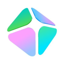
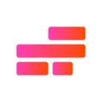
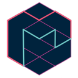
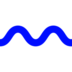

Free AI agent tools
Free tools built by AgentScout, plus 949 free and open-source AI agent tools from our directory, grouped by category.
Looking for something specific? Try popular searches like free AI coding agents or browse AI agents by role.
Ranked picks: Best free AI agents · Best self-hosted AI agents · Most-starred open-source projects · All best lists
Free tools by role: Developers · AI engineers · Marketers · Sales teams · Customer support teams · Designers · Artists · Photographers · Filmmakers · Video editors · Musicians and producers · Researchers · Data analysts · Crypto traders · Founders and small businesses · DevOps and SRE engineers · Security engineers · Game developers · Content creators · QA engineers · Data engineers · Product managers · Students · Operations teams · Startup CTOs · Agencies · Open-source maintainers · MCP developers · Automation engineers · E-commerce teams
Featured: free from AgentScout
Unlimited Free AI Image Generator
Type a prompt and get an image in seconds. No sign-up needed. Powered by FLUX.1 [schnell].
Open the image generatorFree AI tools built by 
Calculators and generators that run entirely in your browser. No sign-up, no API key, nothing sent to a server.
AI API Cost Calculator
Estimate what an AI model costs per request, per day and per month. Compare GPT, Claude, Gemini and Grok API prices side by side.
AI Token Counter
Paste text and get an instant estimate of how many tokens it uses, plus words, characters and what it costs as input.
AI Prompt Builder
Fill in a few fields and get a clear, well-structured prompt for ChatGPT, Claude, Gemini or Grok. Copy it in one click.
AI Agent Setup Generator
Generate starter config files and system prompts for Claude Code, Codex, Cursor, CrewAI, LangChain and the OpenAI Agents SDK.
MCP Config Builder
Add MCP servers once and get ready-to-paste config for Claude Desktop, Claude Code, Cursor and VS Code.
Free and open-source tools in the directory
Included when the pricing the maker states says open source, open weights or open standard, free, a free tier or plan, or freemium. Open-source tools can still have paid cloud plans or need a paid model API key. Check each official site.
MCP & infra (171) · frameworks (123) · coding (122) · browser/computer use (55) · personal agents (55) · memory & RAG (38) · research (32) · 3D & concept art (32) · graphic design & branding (30) · photography & photo editing (28) · evals & observability (25) · image generation (25) · no-code builders (22) · film & TV production (20) · voice (18) · security & governance (18) · sandboxes & code execution (16) · crypto (16) · productivity (15) · vision (15) · video generation (13) · music production (13) · games (12) · app builders (10) · models & local runtimes (8) · film & TV audio (7) · business agents (6) · sales & marketing (3) · customer support (1)
MCP & infra (171)
 REA Open source
REA Open source
MCP server and CLI that lets coding agents reverse engineer native binaries, Electron and JavaScript apps, .NET assemblies and live websites, using Ghidra, Hopper or IDA under the hood. MCP reference servers Open source
MCP reference servers Open source
Official collection of reference MCP servers. OmniRoute Open source
OmniRoute Open source
Self-hosted AI gateway that puts hundreds of model providers behind one endpoint for Claude Code, Codex, Cursor and others, with quota-aware fallback and MCP/A2A support. Context7 Freemium
Context7 Freemium
MCP server and platform that feeds coding agents up-to-date, version-specific library documentation. LiteLLM Open source + cloud
LiteLLM Open source + cloud
Open-source AI gateway and Python SDK that calls 100+ LLM providers in the OpenAI format, with cost tracking, guardrails, load balancing and logging. CLI-Anything Open source (Apache-2.0)
CLI-Anything Open source (Apache-2.0)
Open-source project from HKUDS that generates agent-native command-line interfaces for existing software, codebases and web APIs, with CLI-Hub, a registry of community CLIs that coding agents can install and drive. Codebase Memory MCP Open source
Codebase Memory MCP Open source
MCP server that indexes codebases into a persistent knowledge graph so coding agents can look up structure quickly. Kong Gateway Open source + cloud
Kong Gateway Open source + cloud
Cloud-native API, LLM and MCP gateway that adds routing, auth, multi-LLM support, semantic security and MCP traffic analytics through plugins. skills.sh Open source (MIT)
skills.sh Open source (MIT)
Vercel Labs' open-source CLI (npx skills) and directory for finding, installing and sharing agent skills across Claude Code, Codex, Cursor, OpenCode and 75+ other coding agents. GitHub MCP Server Open source
GitHub MCP Server Open source
GitHub's official MCP server for letting agents work with repositories, issues, pull requests and Actions. Google Workspace CLI Open source
Google Workspace CLI Open source
Official Google Workspace command-line tool for Drive, Gmail, Calendar, Docs and more, usable by agents. MCP for Blender Open source
MCP for Blender Open source
Community MCP plugin that lets Claude and other LLMs control Blender for prompt-driven 3D modeling, scene creation and manipulation. Serena Open source
Serena Open source
MCP toolkit that gives coding agents semantic code retrieval and editing, like IDE features. FastMCP Open source
FastMCP Open source
Pythonic framework for building MCP servers and clients quickly. MCP Python SDK Open source
MCP Python SDK Open source
Official Python SDK for building Model Context Protocol servers and clients. n8n-MCP Open source
n8n-MCP Open source
MCP server that lets Claude, Cursor and other agents build n8n workflows for you. Magpie Free and open source (MIT)
Magpie Free and open source (MIT)
Free, open-source menu bar app and local gateway that lets any coding agent (Claude Code, Codex, Gemini CLI, OpenCode and 60+ more) use any model provider or subscription, with failover when a quota runs out. MCP Toolbox for Databases Open source
MCP Toolbox for Databases Open source
Open-source MCP server from Google for connecting agents to databases. Framelink Figma MCP Open source
Framelink Figma MCP Open source
MCP server that gives Cursor and other coding agents Figma layout data so they can implement designs accurately in one shot. Corsair Open source
Corsair Open source
Integration layer for connecting your users' apps to agents. Casdoor Open source
Casdoor Open source
Agent-first identity and access management with an MCP and agent gateway. MCP TypeScript SDK Open source
MCP TypeScript SDK Open source
Official TypeScript SDK for building MCP servers and clients. Portkey AI Gateway Open source + cloud
Portkey AI Gateway Open source + cloud
Fast open-source AI gateway that routes requests to hundreds of LLMs through one API with fallbacks, load balancing and built-in guardrails. IDA Pro MCP Open source
IDA Pro MCP Open source
MCP server connecting IDA Pro to language models for AI-assisted reverse engineering. CocoIndex Open source
CocoIndex Open source
Incremental data engine for keeping agent context and indexes fresh. Apify MCP Server Open source + cloud
Apify MCP Server Open source + cloud
Apify's MCP server giving agents access to thousands of scrapers for social media, search and maps. MCP Inspector Open source
MCP Inspector Open source
Official developer tool for testing and debugging MCP servers through a web UI, CLI or terminal UI. Tyk Gateway Open source + cloud
Tyk Gateway Open source + cloud
Cloud-native API and AI gateway supporting REST, GraphQL, gRPC and MCP, with rate limiting, auth and analytics. mcp-use Open source
mcp-use Open source
Full-stack MCP framework for building MCP servers, MCP apps and agents that connect to them. Electric Open source + cloud
Electric Open source + cloud
Sync engine and agent platform that keeps data in sync between Postgres, apps and agents in real time. Desktop Commander MCP Open source
Desktop Commander MCP Open source
MCP server that gives Claude and other clients terminal control, process management, file search and diff-based file editing on your computer. Bindu Open source
Bindu Open source
Identity, communication and payments layer that lets AI agents talk to and pay each other. AWS MCP Servers Open source
AWS MCP Servers Open source
Collection of official open-source MCP servers for working with AWS services from agents. Nasiko Open source
Nasiko Open source
Open runtime for deploying and operating AI agents. Bifrost Open source + cloud
Bifrost Open source + cloud
High-performance AI gateway from Maxim that unifies 20+ LLM providers behind one OpenAI-compatible API and acts as an MCP and agent gateway. GitMCP Open source
GitMCP Open source
Free remote MCP server that gives agents up-to-date docs and code for any GitHub project. Reef Open source
Reef Open source
Infrastructure for continually self-improving agents. Manifest Open source
Manifest Open source
Open-source LLM gateway that routes each request from agents and apps to the right model across API keys, subscriptions and local models, with spend tracking. MCP Registry Open source
MCP Registry Open source
Official community-driven registry service and API that lists Model Context Protocol servers for MCP clients, like an app store for servers. BrowserTools MCP Open source
BrowserTools MCP Open source
MCP server that lets Cursor and other agents read browser console logs and network activity. Talk to Figma MCP Open source
Talk to Figma MCP Open source
MCP integration that lets coding agents read and edit Figma designs. smolvm Open source
smolvm Open source
Portable, branchable virtual machine for running agents safely on your computer. Open Connector Open source
Open Connector Open source
Open-source auth gateway connecting SaaS apps to AI agents via SDK, CLI and MCP. Lemonade Open source
Lemonade Open source
Local server that runs optimized LLMs on your GPU or NPU for local AI apps and agents. Klavis AI Open source + cloud
Klavis AI Open source + cloud
MCP integration platform that lets agents use many tools reliably at scale. Wigolo Open source
Wigolo Open source
Local-first web search, fetch and crawl for coding agents over MCP, with no API keys. Zotero MCP Open source
Zotero MCP Open source
MCP server that connects your Zotero research library to Claude and other assistants. agentgateway Open source
agentgateway Open source
Proxy for AI agents and MCP servers with security and observability. Olares Open source
Olares Open source
Open-source personal cloud OS for running always-on agents at home. Monid Open source + cloud
Monid Open source + cloud
Gateway that gives an agent one base URL and one key to call thousands of paid tools, from web scraping and enrichment to image and voice generation, billed per call. SkillHub Open source
SkillHub Open source
Self-hosted registry for publishing, versioning and governing agent skill packages across an organization, with RBAC and audit logs. MCP Go SDK Open source
MCP Go SDK Open source
Official Go SDK for building Model Context Protocol servers and clients, maintained with Google. MCP-UI Open source
MCP-UI Open source
SDK that lets MCP servers send interactive web components such as forms, charts and buttons that chat hosts render inside the conversation. Home Assistant MCP (ha-mcp) Open source
Home Assistant MCP (ha-mcp) Open source
Community MCP server that lets AI assistants control Home Assistant devices, read their states and build or edit automations in plain language. MCPorter Open source
MCPorter Open source
TypeScript runtime and CLI for discovering and calling MCP servers from scripts, terminals and agents, or packaging them as standalone CLIs. ACI.dev Open source + cloud
ACI.dev Open source + cloud
Open-source tool-calling platform connecting hundreds of tools to agents. ContextForge Open source
ContextForge Open source
IBM's gateway and registry that fronts MCP, A2A and REST APIs with one endpoint. MCP C# SDK Open source
MCP C# SDK Open source
Official C# SDK for building MCP servers and clients, maintained with Microsoft. Observal Open source
Observal Open source
Self-hosted registry and insight engine for sharing coding-agent skills, MCP servers and agents across a team. Unity MCP Open source
Unity MCP Open source
MCP tools and CLI that let AI agents develop and test inside the Unity engine. mcpo Open source
mcpo Open source
Simple proxy that exposes MCP servers as OpenAPI endpoints. AntV MCP Server Chart Open source
AntV MCP Server Chart Open source
MCP server from AntV that lets agents generate more than 25 chart types. Cloudflare MCP Servers Open source
Cloudflare MCP Servers Open source
Cloudflare's collection of MCP servers for Workers, observability, DNS analytics and other Cloudflare services. Archestra Open source + cloud
Archestra Open source + cloud
Enterprise AI platform with guardrails, an MCP registry, gateway and orchestrator. optillm Open source
optillm Open source
Inference proxy that applies reasoning techniques to improve LLM answers. Excel MCP Server Open source
Excel MCP Server Open source
MCP server that lets agents create and edit Excel files with formulas and charts. APM (Agent Package Manager) Open source
APM (Agent Package Manager) Open source
Microsoft's open-source dependency manager for AI agent configuration that installs skills, prompts and MCP servers across Copilot, Claude Code, Cursor and others from one manifest. MCP Rust SDK Open source
MCP Rust SDK Open source
Official Rust SDK for the Model Context Protocol. LinkedIn MCP Server Open source
LinkedIn MCP Server Open source
MCP server that gives agents access to LinkedIn profiles, companies and jobs. Radar Open source
Radar Open source
Open-source Kubernetes UI with a built-in MCP server for agents. Azure MCP Server Open source
Azure MCP Server Open source
Microsoft's Azure MCP server connecting agents to Azure services. MCP Java SDK Open source
MCP Java SDK Open source
Official Java SDK for MCP servers and clients. Mirage Open source
Mirage Open source
Virtual terminal environment for AI agents. DBHub Open source
DBHub Open source
Database MCP server for Postgres, MySQL, SQL Server and others from Bytebase. Jarvis Registry Open source
Jarvis Registry Open source
Open-source MCP and A2A agent gateway that connects copilots and agents to enterprise tools with identity, access control and observability. OneCLI Open source
OneCLI Open source
Sandboxed agent harness for teams with secure credential handling. DaVinci Resolve MCP Open source
DaVinci Resolve MCP Open source
MCP server for controlling DaVinci Resolve Studio from AI agents. Grafana MCP Open source
Grafana MCP Open source
Grafana's MCP server giving agents access to dashboards, data sources and incidents. AgentFS Open source
AgentFS Open source
Turso's filesystem for agents with snapshots and auditing. Postgres MCP Pro Open source
Postgres MCP Pro Open source
Postgres MCP server with index tuning, explain plans, health checks and safe SQL execution for agents. Open Terminal Open source
Open Terminal Open source
Self-hosted terminal service from the Open WebUI team that gives AI agents an API to run commands, manage files and execute code. Google Workspace MCP Open source
Google Workspace MCP Open source
MCP server and CLI that gives AI assistants natural-language control of Gmail, Calendar, Drive, Docs, Sheets, Slides, Forms, Tasks and Chat. arXiv MCP Server Open source
arXiv MCP Server Open source
MCP server for searching and reading arXiv papers. HarnessRouter Open source + cloud
HarnessRouter Open source + cloud
One API for running coding-agent harnesses such as Codex, Claude Code and Hermes as product backends, with sessions, streaming, files and failure handling. MCP Apps Open source
MCP Apps Open source
Official spec and SDK for MCP Apps, the standard for interactive UIs like charts and forms that MCP servers render inside chat clients. Supabase MCP Open source
Supabase MCP Open source
Supabase's MCP server for managing databases, migrations and projects. Omnara Open source + cloud
Omnara Open source + cloud
Open-source managed agent platform, a self-hostable alternative to Claude Managed Agents and the OpenAI Agents API, with tools, secrets and sandboxes. mcp-proxy Open source
mcp-proxy Open source
Bridge between Streamable HTTP and stdio MCP transports. MetaMCP Open source
MetaMCP Open source
Aggregator and gateway that combines many MCP servers into one. Bright Data MCP Open source + cloud
Bright Data MCP Open source + cloud
Bright Data's MCP server for web search, scraping and browsing. MCPHub Open source
MCPHub Open source
Self-hosted MCP gateway for managing many servers. NitroStack Open source + cloud
NitroStack Open source + cloud
TypeScript framework with decorators and dependency injection for building, testing and deploying MCP servers and MCP apps, with a companion desktop studio. BoxLite Open source
BoxLite Open source
Embeddable micro-VM for running AI agents. Figma Console MCP Open source
Figma Console MCP Open source
Design-system-focused MCP server that reads and writes Figma and checks design-code parity and accessibility. ToolHive Open source
ToolHive Open source
Stacklok platform that runs MCP servers in isolated containers with per-request identity, access policy and observability. Unla Open source
Unla Open source
Lightweight MCP gateway that turns existing MCP servers and APIs into MCP endpoints without code changes, with a management UI. Kubernetes MCP Server Open source
Kubernetes MCP Server Open source
MCP server for Kubernetes and OpenShift that lets agents view and manage cluster resources. Skybridge Open source
Skybridge Open source
Full-stack TypeScript and React framework for building MCP Apps and ChatGPT Apps. Figma MCP Server Freemium
Figma MCP Server Freemium
Figma's MCP server that brings design context from Figma files into coding agents. Azure DevOps MCP Open source
Azure DevOps MCP Open source
Microsoft's MCP server that gives AI agents access to Azure DevOps work items, repos, pipelines and more, local or hosted. Stripe Agent Toolkit Open source
Stripe Agent Toolkit Open source
Stripe's agent toolkit and MCP server for customers, payments and billing. pg-aiguide Open source
pg-aiguide Open source
Timescale's MCP server with PostgreSQL docs and best practices for agents. Grounded Docs MCP Open source
Grounded Docs MCP Open source
Self-hosted MCP server that indexes up-to-date documentation from websites, GitHub, npm and PyPI so coding agents query the right version. iMCP Open source
iMCP Open source
macOS app that exposes your Messages, Contacts, Calendar, Reminders and more to AI assistants through MCP. Testkube MCP Open source
Testkube MCP Open source
Testkube MCP server for managing test workflows and executions. MCP PHP SDK Open source
MCP PHP SDK Open source
Official PHP SDK for building MCP servers and clients, maintained with the PHP Foundation and Symfony. MiniMax MCP Open source
MiniMax MCP Open source
Official MiniMax MCP server that lets agents call MiniMax text-to-speech, voice cloning, image and video generation. Terraform MCP Server Open source
Terraform MCP Server Open source
HashiCorp's Terraform MCP server for looking up providers and modules and automating workflows. Brave Search MCP Open source
Brave Search MCP Open source
Brave's official MCP server for web, image, video, news and local search through the Brave Search API. ROS MCP Server Open source
ROS MCP Server Open source
Connects Claude and other models to ROS robots. MCP Kotlin SDK Open source
MCP Kotlin SDK Open source
Official Kotlin Multiplatform SDK for building MCP servers and clients on JVM, Native, JS and Wasm, maintained with JetBrains. SearXNG MCP Open source
SearXNG MCP Open source
MCP server for private web search through SearXNG. Jupyter MCP Server Open source
Jupyter MCP Server Open source
Datalayer's MCP server that lets AI agents connect to and manage Jupyter notebooks in real time, local or hosted. Power BI Modeling MCP Open source
Power BI Modeling MCP Open source
Microsoft's MCP server that lets agents build and edit Power BI semantic models. Ref Freemium
Ref Freemium
Token-efficient documentation search for coding agents. MongoDB MCP Server Open source
MongoDB MCP Server Open source
MongoDB's official MCP server for querying databases and managing Atlas. Agent Mesh Open source
Agent Mesh Open source
Private peer-to-peer network for AI agents: each node publishes tools and models, finds other agents' tools and carries a verifiable identity. Obot Open source + cloud
Obot Open source + cloud
Open-source platform for companies to host, approve and govern MCP servers, skills and agent access in one place. Atlassian Rovo MCP Server Freemium
Atlassian Rovo MCP Server Freemium
Atlassian's Rovo MCP server that connects agents to Jira, Confluence and other Atlassian cloud apps. StackQL Open source
StackQL Open source
SQL engine with an MCP server for querying and provisioning cloud resources. Arcade Open source + cloud
Arcade Open source + cloud
Actions runtime for enterprise agents with thousands of prebuilt authenticated tools, plus an open-source framework for building your own MCP servers. Neo4j MCP Open source
Neo4j MCP Open source
Neo4j MCP servers for querying graphs, managing Aura instances and graph memory. ClickHouse MCP Open source
ClickHouse MCP Open source
Official ClickHouse MCP server for querying and exploring ClickHouse databases. LINE Bot MCP Server Open source
LINE Bot MCP Server Open source
LINE's preview MCP server that connects an AI agent to a LINE Official Account through the Messaging API. Neon MCP Open source
Neon MCP Open source
Neon's official MCP server for managing Postgres projects, branches and queries. Redis MCP Server Open source
Redis MCP Server Open source
Redis' official MCP server for working with data in Redis through natural language. Cloud Run MCP Open source
Cloud Run MCP Open source
Google Cloud's MCP server and Gemini CLI extension that lets AI agents deploy apps to Cloud Run. dbt MCP Open source
dbt MCP Open source
dbt Labs' MCP server that gives AI agents context and tools for dbt Core, dbt Fusion and dbt Platform projects. joinly Open source
joinly Open source
Connector middleware and MCP server that lets AI agents join video calls and take part in meetings in real time. Kagi MCP Open source
Kagi MCP Open source
Official Kagi MCP server with search and page-extraction tools backed by the Kagi API. Anytype MCP Open source
Anytype MCP Open source
Official MCP server for the Anytype knowledge app. MotherDuck MCP Open source
MotherDuck MCP Open source
MotherDuck's MCP server that lets AI assistants run SQL on local DuckDB files, S3-hosted databases and MotherDuck. Zapier MCP Freemium
Zapier MCP Freemium
Zapier's hosted MCP server that connects agents to thousands of apps. monday.com MCP Open source
monday.com MCP Open source
monday.com's MCP server for managing boards, items and workflows. Postman MCP Server Open source
Postman MCP Server Open source
Postman's MCP server giving agents access to workspaces, collections and APIs. Hugging Face MCP Server Open source
Hugging Face MCP Server Open source
Hugging Face's MCP server connecting agents to the Hub's models, datasets, papers and Gradio Spaces. Mux MCP Open source
Mux MCP Open source
Mux's official MCP server for video and the Mux API. Webflow MCP Open source
Webflow MCP Open source
Webflow's MCP server for designing and managing Webflow sites. Auth0 MCP Server Open source
Auth0 MCP Server Open source
Auth0's MCP server for managing applications, APIs, actions and logs in an Auth0 tenant through an agent. ScrapeGraph MCP Open source
ScrapeGraph MCP Open source
ScrapeGraphAI's MCP server for AI-powered web scraping. InfraNodus MCP Open source
InfraNodus MCP Open source
Turns text into knowledge graphs for agents. Oxylabs MCP Open source
Oxylabs MCP Open source
Oxylabs' MCP server for fetching and parsing web content at scale. Upstash MCP Open source
Upstash MCP Open source
Upstash's MCP server for managing Redis and other Upstash resources. Buildkite MCP Open source
Buildkite MCP Open source
Buildkite's MCP server exposing pipelines, builds, jobs and logs to coding agents. Amplitude MCP Freemium
Amplitude MCP Freemium
Amplitude's MCP server for searching and analyzing product analytics data from an agent. Linkup MCP Open source
Linkup MCP Open source
Linkup's MCP server for real-time, source-backed web search. Stack Overflow MCP Freemium
Stack Overflow MCP Freemium
Official remote MCP server that lets coding agents search and pull vetted Stack Overflow questions and answers, with a free daily call allowance per user. Vercel MCP Freemium
Vercel MCP Freemium
Vercel's official MCP server for searching docs and managing projects and deployments. Wix MCP Open source
Wix MCP Open source
Wix's MCP server for building and managing Wix sites and business data. PayPal MCP Open source
PayPal MCP Open source
PayPal's MCP server for invoices, orders, payments and other PayPal operations from agents. New Relic MCP Freemium
New Relic MCP Freemium
New Relic's MCP server for querying metrics, logs, traces and alerts through an agent. Aident AI Freemium
Aident AI Freemium
Connects AI agents to more than 1,000 apps through one integration so they can act across tools. PlanetScale MCP Freemium
PlanetScale MCP Freemium
PlanetScale's MCP server for databases, branches, schemas and query insights. Lune Research Freemium
Lune Research Freemium
MCP server that grounds AI agents in full-text computer science research papers. 9bot Paid with a 7-day free trial; Basic Pro US$35/mo for the first 3 months, then US$70/mo
9bot Paid with a 7-day free trial; Basic Pro US$35/mo for the first 3 months, then US$70/mo
AI bot and operations hub for WhatsApp groups and communities that automates messages, commands, moderation (spam, suspicious links), news delivery, Channel posts, integrations and engagement reporting. An official MCP server lets AI assistants and agents manage the groups. Agent Resource Market Free beta; real-money payments are disabled and exchanges use DEMO_CREDITS
Agent Resource Market Free beta; real-money payments are disabled and exchanges use DEMO_CREDITS
Eellos LLC's API-first beta where AI agents discover and publish resource offers, join structured discussions and post contextual reviews. Exchanges are simulated with demo credits (payments are disabled) and registration is capacity-limited. Airtable MCP Freemium
Airtable MCP Freemium
Airtable's official MCP server that lets agents read and write bases, tables and records. Canva MCP Freemium
Canva MCP Freemium
Canva's MCP server for creating, searching, editing and exporting designs from AI assistants. CircleCI MCP Freemium
CircleCI MCP Freemium
CircleCI's MCP servers (hosted and CLI) for diagnosing build failures, inspecting runs and managing CI pipelines from coding agents. Composio Free tier + paid plans
Composio Free tier + paid plans
Tool integrations and auth for agents across hundreds of apps. GitLab MCP Freemium
GitLab MCP Freemium
GitLab's official MCP server for letting agents work with projects, issues and merge requests. Linear MCP Freemium
Linear MCP Freemium
Linear's official remote MCP server for letting agents find, create and update issues, projects and comments. MailVeri MCP MIT-licensed server; MailVeri API is pay-as-you-go credits (1,000 free on sign-up, from $9 for 10,000), no subscription
MailVeri MCP MIT-licensed server; MailVeri API is pay-as-you-go credits (1,000 free on sign-up, from $9 for 10,000), no subscription
Open-source MCP server that lets AI agents and coding assistants verify single emails and bulk email lists through the MailVeri API, with SMTP, catch-all, disposable and role-account detection. Manifold MCP Free to start
Manifold MCP Free to start
Hosted MCP server giving agents SEO, AI-answer, social, ad and leads data. Model Context Protocol Open standard
Model Context Protocol Open standard
Open standard for connecting agents to tools and data. Notion MCP Freemium
Notion MCP Freemium
Notion's official hosted MCP server that lets AI agents search, read and update pages and databases in your workspace. NVIDIA Open Agent Safety Platform OpenShell open source; hardware layer needs NVIDIA systems
NVIDIA Open Agent Safety Platform OpenShell open source; hardware layer needs NVIDIA systems
Reference stack pairing OpenShell with NVIDIA Sentry on BlueField-4 DPUs for hardware-level agent monitoring. RobotTraining.jobs Free for job seekers; free remote MCP server and open data (no key, CC BY 4.0); employers pay per onboarded hire or $99 per featured role for 30 days
RobotTraining.jobs Free for job seekers; free remote MCP server and open data (no key, CC BY 4.0); employers pay per onboarded hire or $99 per featured role for 30 days
Free job board and remote MCP server for paid robot-training work (teleoperation, demonstration recording, AV and drone test operations): AI assistants can search open roles, hourly pay and hiring data with no key or account. Self Agent Vault Free, Plus and Enterprise tiers; first 1,000 sign-ups get Plus free for three months
Self Agent Vault Free, Plus and Enterprise tiers; first 1,000 sign-ups get Plus free for three months
Payment and login layer for AI agents: agents check out and sign in using mock tokens, while real card numbers and passwords are swapped in out of the agent's view, with spending caps, merchant allowlists and a kill switch. Smithery Free + paid
Smithery Free + paid
Registry for finding and installing MCP servers. zero.xyz Free to install with $5 starting credit; many services are free, paid ones are charged per call with no markup.
zero.xyz Free to install with $5 starting credit; many services are free, paid ones are charged per call with no markup.
Lets AI agents discover, connect to and pay per call for thousands of APIs and services without API-key setup or separate sign-ups.
Frameworks (123)
 Hermes Agent (Nous Research) Open source
Hermes Agent (Nous Research) Open source
Open-source agent harness; v0.21.7 stable shipped Oct 12, v0.22.0 RCs Oct 13-14. DeepSeek Harness Open source
DeepSeek Harness Open source
DeepSeek's open-source agent harness with a local web UI, built so that every tool, model and scheduled task is a swappable plugin; still a developer preview. Ruflo Open source (MIT); model costs still apply
Ruflo Open source (MIT); model costs still apply
Open-source multi-agent meta-harness for Claude Code, Codex, and MCP clients; Oct 13 release adds Mods (mission workflows) and a single control plane with human approval. MetaGPT Open source
MetaGPT Open source
Multi-agent framework that assigns roles like product manager and engineer to LLM agents to build software. CrewAI Open source + paid cloud
CrewAI Open source + paid cloud
Framework for role-based multi-agent crews. PrivateGPT Open source
PrivateGPT Open source
Open-source API layer that turns local models into private AI applications, with RAG, tools, skills, MCP and text-to-SQL on any OpenAI-compatible server. LlamaIndex Open source + paid cloud
LlamaIndex Open source + paid cloud
Framework for agents over your data (RAG, document agents). LangGraph Open source
LangGraph Open source
Framework for stateful, graph-based agent workflows. Agno Open source + cloud
Agno Open source + cloud
Python framework and runtime for building, running and managing multi-agent systems with memory, knowledge and tools. OpenHuman Open source
OpenHuman Open source
Lightweight open-source agent harness designed to run many agents cheaply on small servers. AstrBot Open source
AstrBot Open source
Open-source agent chatbot platform and framework that connects LLMs, plugins and tools to mainstream messaging apps for assistants, support bots and knowledge bases. DSPy Open source
DSPy Open source
Stanford framework for programming rather than prompting language models, with optimizers that tune prompts and weights for RAG pipelines and agent loops. CopilotKit Open source + cloud
CopilotKit Open source + cloud
Frontend stack for putting agents and generative UI into React and other apps, from the makers of the AG-UI protocol. ChatDev Open source
ChatDev Open source
Zero-code multi-agent platform from OpenBMB, grown from a software-development agent company into a general multi-agent orchestration system. AgentScope Open source
AgentScope Open source
Framework for building and running transparent multi-agent applications with visual debugging. Orkes Open source + cloud
Orkes Open source + cloud
Orchestration platform built on Conductor for durable workflows and AI agents. LangChain Deep Agents Open source
LangChain Deep Agents Open source
Library for long-running agents with subagents and skills; 0.7.23 (Oct 7) adds pinned_skills. OpenAI Agents SDK (Python) Open source
OpenAI Agents SDK (Python) Open source
OpenAI's Python SDK for building multi-agent workflows; v0.23.0/0.23.1 released Oct 1-2. smolagents Open source
smolagents Open source
Hugging Face's minimal library for code-writing agents. Haystack Open source + cloud
Haystack Open source + cloud
Open-source orchestration framework for building production LLM apps, RAG and agents. A2A Open standard
A2A Open standard
Agent2Agent, an open protocol for agents built on different frameworks to communicate and work together. Letta Open source + paid cloud
Letta Open source + paid cloud
Framework for stateful agents with long-term memory (formerly MemGPT). Go Micro Open source
Go Micro Open source
Go framework for distributed systems where services double as tools for AI agents, with RPC, discovery, messaging and agent workflows. BabyAGI Open source
BabyAGI Open source
Yohei Nakajima's experimental self-building agent framework that creates, stores and runs its own functions. Google ADK Open source
Google ADK Open source
Google's Agent Development Kit for building and deploying agents. Guidance Open source
Guidance Open source
Programming paradigm for steering language models that constrains output with regex and grammars and interleaves control flow with generation. Pydantic AI Open source
Pydantic AI Open source
Type-safe Python agent framework from the Pydantic team. Agent Zero Open source
Agent Zero Open source
Open-source agentic framework and computer assistant whose agents use their own OS environment, create tools and self-correct. Agent Lightning Open source
Agent Lightning Open source
Microsoft's lightweight trainer that improves existing agents with reinforcement learning through a model proxy, without rewriting the agent's tools or control flow. Parlant Open source
Parlant Open source
Framework for building reliable customer-facing agents with explicit behavior guidelines. OpenFang Open source
OpenFang Open source
Open-source agent operating system for running autonomous agents. CAMEL Open source
CAMEL Open source
CAMEL, one of the first multi-agent frameworks, for building role-playing agents and large agent societies. RocketRide Open source
RocketRide Open source
AI pipeline engine with a C++ core and 50+ Python nodes for building, debugging and deploying LLM workflows and agents from VS Code or the CLI. AG-UI Open standard
AG-UI Open standard
Agent-User Interaction protocol for streaming agent state and events into frontend apps. Trigger.dev Open source + cloud
Trigger.dev Open source + cloud
Platform for building and deploying durable background AI agents and workflows in TypeScript. Outlines Open source
Outlines Open source
Library from .txt for structured generation that guarantees LLM output matches a JSON schema, regex or grammar. Microsoft Agent Framework Open source
Microsoft Agent Framework Open source
Microsoft's framework for building and orchestrating agents and multi-agent workflows in Python and .NET. Instructor Open source
Instructor Open source
Library for getting validated structured outputs from any LLM, built on Pydantic with retries and type safety. assistant-ui Open source
assistant-ui Open source
Open-source React components and runtimes for building AI chat and agent front ends with streaming, tools and persistence. OpenUI Open source
OpenUI Open source
Framework-agnostic generative UI framework with a compact streaming language and runtimes for React, Vue, Svelte and Angular. PocketFlow Open source
PocketFlow Open source
Minimalist 100-line LLM framework for building agents and workflows. Tambo Open source + cloud
Tambo Open source + cloud
Generative UI SDK for React that lets agents render components. Aden Hive Open source
Aden Hive Open source
Multi-agent harness for production AI. Spring AI Alibaba Open source
Spring AI Alibaba Open source
Agentic AI framework for Java developers built on Spring AI. Omnigent Open source
Omnigent Open source
Open-source agent framework and meta-harness that orchestrates Claude Code, Codex, Cursor and other agents together. VoltAgent Open source + cloud
VoltAgent Open source + cloud
TypeScript agent framework plus an engineering platform for building, observing and deploying AI agents. OpenPipe Open source + cloud
OpenPipe Open source + cloud
Reinforcement learning tooling, including the ART library, to train better agents. BAML Open source
BAML Open source
Typed programming language for agents and LLM functions, with runtime types, typed errors and structured outputs designed to reduce agent mistakes. PraisonAI Open source
PraisonAI Open source
Multi-agent framework for building a self-improving AI workforce with little code. Strands Agents Open source
Strands Agents Open source
Strands open-source SDK for building production agent harnesses in Python and TypeScript. TypeChat Open source
TypeChat Open source
Microsoft library for building natural-language interfaces by using types to constrain and validate LLM responses. Evolver Open source
Evolver Open source
Self-evolving engine for AI agents with auditable genes, capsules and events. Claude Agent SDK (Python) Open source
Claude Agent SDK (Python) Open source
Anthropic's Python SDK for building agents on Claude Code's agent loop, with the CLI bundled, custom tools and hooks. Upsonic Open source
Upsonic Open source
Python framework for building autonomous AI agents. Agent Squad Open source
Agent Squad Open source
Framework for routing conversations across multiple specialized AI agents. Flyte Open source + cloud
Flyte Open source + cloud
Type-safe orchestration for agents, ML pipelines and inference on Kubernetes. OpenEvolve Open source
OpenEvolve Open source
Open-source take on AlphaEvolve that uses LLM agents to evolve better code and algorithms. Swarms Open source + cloud
Swarms Open source + cloud
Enterprise multi-agent orchestration framework. Agent-Native (Builder.io) Open-source framework; optional hosted building on Builder.io
Agent-Native (Builder.io) Open-source framework; optional hosted building on Builder.io
Open-source TypeScript framework for building agents that come with their own app UI; each action is shared by the UI, agent, API, CLI, MCP and A2A. Open Multi-Agent Open source
Open Multi-Agent Open source
Self-hosted TypeScript agent runtime with durable approvals and verifiable run records. Julep Open source + cloud
Julep Open source + cloud
Platform for durable AI agent workflows that can crash, resume and retry safely. Genkit Open source
Genkit Open source
Google's open-source framework for building agentic apps in JavaScript, Go, Dart and Python. IntentKit Open source
IntentKit Open source
Self-hosted cloud cluster for running a team of collaborating AI agents. TrueForge Open source
TrueForge Open source
Open-source agent harness runtime that turns an LLM into a working agent. Marvin Open source
Marvin Open source
Python library from Prefect for building AI agents and structured LLM workflows. Agents CLI Open source
Agents CLI Open source
Google's CLI and skills that teach coding assistants to build, evaluate and deploy agents on Google Cloud and the Gemini platform. AgentScope Java Open source
AgentScope Java Open source
Java version of AgentScope for building distributed, long-running agents. Open Agents Open source
Open Agents Open source
Vercel's open-source template for building cloud agents. Apache Maka Open source
Apache Maka Open source
Incubating Apache agent harness and workspace that records everything it does and publishes benchmarked run results. Cloudflare Agents Open source
Cloudflare Agents Open source
Cloudflare's SDK for building and deploying stateful AI agents on Workers. AReaL Open source
AReaL Open source
Reinforcement learning system for training LLM-based agents. ZenML Open source + cloud
ZenML Open source + cloud
MLOps and agent platform for building pipelines and deploying agents. Raven Open source
Raven Open source
Host agent that plans complex jobs as task graphs and coordinates built-in and third-party agents for research, coding, design and on-call work. FrontierAgent Open source
FrontierAgent Open source
Open-source agent runtime and terminal app for long-horizon research and file work, with single-agent ReAct and parallel agent-team modes. AG2 Open source
AG2 Open source
AG2, the community continuation of AutoGen, an open-source framework for multi-agent systems. Prime Intellect Open source + cloud
Prime Intellect Open source + cloud
Decentralized compute and open RL environment hub for training agentic models. Koog Open source
Koog Open source
JetBrains' Kotlin framework for building predictable, enterprise-ready AI agents on the JVM. Agency Swarm Open source
Agency Swarm Open source
Multi-agent orchestration framework built on the OpenAI Agents SDK for creating collaborating agent "agencies" with defined roles. Docker Agent Open source
Docker Agent Open source
Docker's agent builder and runtime for defining and running agents. Agent Service Toolkit Open source
Agent Service Toolkit Open source
Toolkit for running an agent service with LangGraph, FastAPI and Streamlit. Embabel Open source
Embabel Open source
Agent framework for the JVM from the creator of Spring. RubyLLM Open source
RubyLLM Open source
Ruby framework for working with LLMs, including chat, tools and agents, through one API. MS-Agent Open source
MS-Agent Open source
ModelScope's modular agent framework for complex, long-running tasks that combines models, tools, skills and sub-agents in a customizable harness. Dagu Open source
Dagu Open source
Self-hostable workflow orchestrator with a simple definition format and web UI, usable for agent jobs. DocETL Open source
DocETL Open source
System for agentic, LLM-powered document processing and ETL pipelines from UC Berkeley. Langroid Open source
Langroid Open source
Python framework for multi-agent programming with LLMs. kagent Open source
kagent Open source
Cloud-native framework for running AI agents on Kubernetes. fast-agent Open source
fast-agent Open source
Framework to build, run and evaluate agents with strong MCP, ACP and A2A support. LazyLLM Open source
LazyLLM Open source
Low-code framework for building multi-agent LLM applications. Atmosphere Open source
Atmosphere Open source
Real-time AI agent runtime for the JVM that runs one agent class on Spring AI, LangChain4j and other backends with streaming, MCP, A2A and AG-UI. Antigravity SDK Open source
Antigravity SDK Open source
Google's Python SDK for building stateful AI agents powered by Antigravity and Gemini, abstracting the agent loop and runtime. BeeAI Framework Open source
BeeAI Framework Open source
Framework for building production-ready agents and multi-agent systems in Python or TypeScript. II-Agent Open source
II-Agent Open source
Open-source AI agent for real work from Intelligent Internet that you can run, fork and extend with your own API keys. EvoAgentX Open source
EvoAgentX Open source
Framework for building, evaluating and automatically evolving LLM agents and agentic workflows. TanStack AI Open source
TanStack AI Open source
Type-safe, provider-agnostic TypeScript SDK for chat, tool calling and agents. BotSharp Open source
BotSharp Open source
Multi-agent framework for .NET. Cheshire Cat Open source
Cheshire Cat Open source
Open-source AI agent microservice designed to be easy to understand and extend, with plugins and memory. OpenGAP Open source
OpenGAP Open source
Framework-agnostic, git-native standard and CLI for defining AI agents so a repository becomes a runnable agent. Ax Open source
Ax Open source
DSPy-style framework for building LLM programs and agents in TypeScript. RAGEN Open source
RAGEN Open source
Reinforcement learning framework for multi-turn LLM agents. AgentField Open source
AgentField Open source
Build, run and scale AI agents like APIs and microservices. Agentic Context Engine Open source + cloud
Agentic Context Engine Open source + cloud
Engine that lets agents learn from their own experience. Workflow SDK Open source
Workflow SDK Open source
Vercel's TypeScript SDK for building durable, reliable and observable apps and AI agents. agentUniverse Open source
agentUniverse Open source
Multi-agent framework with reusable collaboration patterns for building LLM agent applications. Lagent Open source
Lagent Open source
Lightweight PyTorch-inspired framework from InternLM for building LLM-based agents. Neuron AI Open source
Neuron AI Open source
PHP framework for creating and orchestrating AI agents with LLMs, tools, vector stores and memory. AgentFlow Open source
AgentFlow Open source
Stanford's trainable agentic system where planner, executor, verifier and generator modules coordinate, with a Hugging Face demo. LangGraph4j Open source
LangGraph4j Open source
Java library for building stateful multi-agent applications as graphs, working with LangChain4j and Spring AI. Langchain.rb Open source
Langchain.rb Open source
Ruby library for building LLM-powered applications, RAG and assistants. Jido Open source
Jido Open source
Elixir framework for building supervised, fault-tolerant agents and multi-agent systems on the BEAM. tRPC-Agent-Go Open source
tRPC-Agent-Go Open source
Go framework for production agent systems with graph workflows, tools, memory, A2A, AG-UI, MCP, evaluation and OpenTelemetry. Adala Open source
Adala Open source
HumanSignal's autonomous data-labeling agent framework, where agents learn labeling skills iteratively. AMD GAIA Open source
AMD GAIA Open source
AMD's open-source toolkit for building AI agents that run locally on Ryzen AI PCs, keeping data on the device. Mirascope Open source
Mirascope Open source
Lightweight Python library for calling any LLM with typed outputs and tools through one interface, without a heavy framework. KaibanJS Open source
KaibanJS Open source
JavaScript-native framework for building and managing multi-agent systems with a Kanban-style board for agent tasks. AWorld Open source
AWorld Open source
Agent harness from inclusionAI for building expert agents that search, reproduce and improve on ideas with their own tools and memory. Dynamiq Open source
Dynamiq Open source
Python orchestration framework for building agentic and RAG applications from reusable nodes and workflows. IBM CUGA Open source
IBM CUGA Open source
IBM Research's configurable generalist agent (CUGA) for enterprise web and API tasks, with a live demo on Hugging Face Spaces. Lyzr Freemium
Lyzr Freemium
Enterprise agent studio and framework for building secure AI agents. Viam Open source + cloud
Viam Open source + cloud
Software platform for building and operating robots and smart machines. Orca Agent Engine Open source (Apache 2.0)
Orca Agent Engine Open source (Apache 2.0)
Open Apache-2.0 runtime to build, run, and govern managed agents with choice of harness (Claude Agent SDK, Codex, Pi) and model; open-sourced Oct 6, 2026 (Developer Preview). Mastra Open source
Mastra Open source
TypeScript framework for agents, workflows and RAG. Vercel AI SDK Open source
Vercel AI SDK Open source
TypeScript toolkit for building AI apps and agents.
Coding (122)
 opencode Open source
opencode Open source
Open-source terminal coding agent that works with many model providers. CC Switch Open source
CC Switch Open source
Desktop manager for Claude Code, Codex, Gemini CLI, OpenCode, OpenClaw and other coding agents that switches API providers in one click and manages MCP servers, skills and prompts. OpenAI Codex CLI Open source; uses ChatGPT plan or API
OpenAI Codex CLI Open source; uses ChatGPT plan or API
OpenAI's open-source coding agent for the terminal; also runs in the cloud. Graphify Open source
Graphify Open source
Turns a codebase plus its docs, SQL schemas, configs and PDFs into a knowledge graph that coding agents can query. Pi Open source (MIT); bring your own model provider or subscription
Pi Open source (MIT); bring your own model provider or subscription
Minimal, extensible open-source terminal coding agent and agent toolkit from Earendil, with a multi-provider LLM API, TypeScript SDK, RPC mode and installable extensions, skills and themes. Gemini CLI Open source; free tier
Gemini CLI Open source; free tier
Google's open-source terminal agent powered by Gemini. Orca Open source
Orca Open source
Agent development environment for running a fleet of parallel coding agents on your own subscriptions and reviewing their work. Zed Open source
Zed Open source
High-performance, multiplayer code editor from the creators of Atom and Tree-sitter, with built-in AI agent editing for macOS, Linux and Windows. OpenHands Open source + paid cloud
OpenHands Open source + paid cloud
Open-source platform for autonomous coding agents. Cline Open source
Cline Open source
Autonomous coding agent inside VS Code with step-by-step approvals. Open Interpreter Open source
Open Interpreter Open source
Terminal coding agent forked from OpenAI's Codex and tuned for low-cost and open-weight models, with switchable harness modes that imitate tools like Claude Code. Warp Open source + cloud
Warp Open source + cloud
Agentic development environment built from the terminal, now open source, for running coding agents and cloud software factories. Goose Open source
Goose Open source
Extensible open-source AI agent that installs, runs, edits and tests code on your machine with any LLM and MCP extensions. Open Code Review Open source
Open Code Review Open source
Alibaba's AI code review CLI that combines deterministic pipelines with an LLM agent to post line-level comments on Git diffs, using OpenAI or Anthropic models. Herdr Open source
Herdr Open source
Runtime for running and managing many coding agents side by side. Codewhale Open source
Codewhale Open source
Rust agent engine and terminal coding client with model choice, tool approvals and review flows. Oh My Claudecode Open source
Oh My Claudecode Open source
Multi-agent orchestration layer for Claude Code that coordinates teams of specialized agents. DeepSeek-Reasonix Open source
DeepSeek-Reasonix Open source
Coding agent built for complex software engineering tasks on DeepSeek models. Oh My Pi Open source
Oh My Pi Open source
Terminal coding agent with IDE features wired in, from Stencil Labs. Tabby Open source + cloud
Tabby Open source + cloud
Self-hosted AI coding assistant that offers an on-premises alternative to GitHub Copilot with no database or cloud service required. Cursor Free tier + paid plans
Cursor Free tier + paid plans
AI code editor with an agent mode and background agents. code-review-graph Open source
code-review-graph Open source
Local code knowledge graph built with Tree-sitter that serves compact review context over MCP, so coding agents read only the files a change touches. Repomix Open source
Repomix Open source
CLI and web tool that packs an entire repository into a single AI-friendly file (with an MCP server) so coding agents and LLMs get full codebase context. Qwen Code Open source
Qwen Code Open source
Open-source terminal coding agent from the Qwen team. Vibe Kanban Open source
Vibe Kanban Open source
Kanban board for planning and running tasks with Claude Code, Codex and other coding agents. Beads Open source
Beads Open source
Issue-tracking memory for coding agents so they can keep track of long-running work. Kilo Code Open source + cloud
Kilo Code Open source + cloud
Open-source AI coding agent for VS Code, JetBrains, the CLI and the cloud that works with 500+ models at no markup. Planning With Files Open source
Planning With Files Open source
File-based planning for coding agents, keeping Markdown plans that survive crashes and session resets. Happy Coder Open source
Happy Coder Open source
Mobile and desktop app to run and control Claude Code, Codex and other agents using your own subscriptions. Paseo Open source
Paseo Open source
Orchestrate multiple coding agents from desktop and mobile. jcode Open source
jcode Open source
High-performance coding agent harness written in Rust. Coder Open source + cloud
Coder Open source + cloud
Self-hosted cloud development environments for developers and their coding agents. DeepCode Open source
DeepCode Open source
Open agentic coding system that turns papers and specs into code with multi-agent orchestration. React Doctor Free CLI (Modified MIT License)
React Doctor Free CLI (Modified MIT License)
Checker that catches bad React patterns written by coding agents and reports issues to fix. MiMo Code Open source
MiMo Code Open source
Xiaomi's terminal coding agent with persistent project memory across sessions; works with any major model provider and is tuned for Xiaomi's MiMo models. Qodo Freemium
Qodo Freemium
AI code review and testing agents that work in the IDE, the terminal and pull requests to catch issues before merge. Agent Orchestrator Open source
Agent Orchestrator Open source
Runs and supervises teams of coding agents from planning to merge. Claude Context Open source
Claude Context Open source
Zilliz MCP plugin that adds semantic code search to Claude Code and other coding agents, using your whole codebase as context. HumanLayer Open source
HumanLayer Open source
Tools for getting coding agents to solve hard problems in complex codebases. OpenChamber Open source
OpenChamber Open source
Agentic development environment built around the OpenCode agent. Open SWE Open source
Open SWE Open source
LangChain's asynchronous coding agent that takes work from GitHub issues, Slack or Linear, implements it in an isolated sandbox and opens a pull request. Trail Code Open source
Trail Code Open source
Context layer that makes Claude Code, Cursor, Codex and other coding agents faster and cheaper on large codebases. Ralph for Claude Code Open source
Ralph for Claude Code Open source
Autonomous development loop for Claude Code that keeps iterating until the task is done. Atlas Open source
Atlas Open source
Source control for coding agents that checkpoints every agent run, links commits back to the prompts behind them and lets you query changes across agents. Hunk Open source
Hunk Open source
Review-first terminal diff viewer for checking what coding agents changed. Oh My OpenCode Slim Open source
Oh My OpenCode Slim Open source
Lean multi-agent suite for OpenCode that mixes models and delegates tasks automatically. Plannotator Open source
Plannotator Open source
Visually annotate and review coding-agent plans and diffs, then send feedback back to the agent. Terax Open source
Terax Open source
Lightweight terminal-first AI development environment. Worktrunk Open source
Worktrunk Open source
CLI for managing Git worktrees so several AI agents can work in parallel. Munder Difflin Open source
Munder Difflin Open source
Free, open-source harness that runs Claude Code, Codex, Gemini CLI and other terminal agents together like an office. mini-SWE-agent Open source
mini-SWE-agent Open source
Tiny 100-line agent that solves GitHub issues or helps on the command line, from the SWE-agent team. Repowise Open source
Repowise Open source
Codebase intelligence tool that indexes code, call graph, git history and docs locally and answers questions for you and your coding agent over MCP. SuperPlane Open source
SuperPlane Open source
Open-source platform for orchestrating one-shot engineering work with agents. Gentle AI Open source
Gentle AI Open source
Configures the coding agents you already use with shared rules, skills and settings. OpenRig Open source
OpenRig Open source
Builds persistent teams of Claude Code, Codex and Pi agents with roles and shared context. Backlog.md Open source
Backlog.md Open source
Markdown task board in your Git repo for coordinating work between people and AI agents. MobileBuildMCP Open source
MobileBuildMCP Open source
Sentry's MCP server and CLI that gives coding agents build, test and run tools for iOS and macOS projects. Mission Control Open source
Mission Control Open source
Self-hosted control plane for dispatching tasks to agents, reviewing runs and tracking spend. Semble Open source
Semble Open source
Fast code search for agents that uses far fewer tokens than grep and file reads. 21st Magic MCP Open source
21st Magic MCP Open source
MCP server from 21st.dev that lets Cursor, Claude Code and Windsurf search and generate React and Tailwind UI components inside the editor. Potpie Open source + cloud
Potpie Open source + cloud
Builds a knowledge graph of your codebase so agents can help across the software lifecycle. Tokscale Open source
Tokscale Open source
Tracks token usage across AI coding agents from your terminal. coucou Open source
coucou Open source
Mac notch and phone companion that monitors your Claude Code, Codex, Cursor and Gemini CLI sessions and lets you approve permissions on the go. TUIOS Open source
TUIOS Open source
Terminal window manager with tiling panes, persistent sessions and one inbox where coding agents report their state and message each other. GitHub Agentic Workflows (gh-aw) Open source
GitHub Agentic Workflows (gh-aw) Open source
Run AI agents in GitHub Actions workflows; v0.91.10 pre-release (Oct 13) defaults read-only workflows to no network. Code-Graph-RAG Open source
Code-Graph-RAG Open source
Graph-based RAG for monorepos that lets agents query and edit multi-language code. Entire CLI Open source
Entire CLI Open source
CLI that captures AI agent sessions alongside your Git commits. MonkeyCode Open source
MonkeyCode Open source
Chaitin's self-hostable AI development platform for engineering teams with dev environments, model management and AI task management. Integuru Open source
Integuru Open source
Agent that builds integrations by reverse engineering platforms' internal APIs. AutoDev Open source
AutoDev Open source
Multi-agent development platform built on Kotlin Multiplatform for research, coding, review and data queries across IntelliJ, VS Code, CLI and more. Kungfu Open source
Kungfu Open source
Workspace that keeps the same task moving across Codex, Claude, OpenCode and other agents without re-explaining context at each handoff. Kiro Crew Open source
Kiro Crew Open source
Kiro's open-source, persistent development workspace that runs unattended and recurring coding tasks locally or on your own hardware. gptme Open source
gptme Open source
Terminal agent with local tools that writes code, runs commands, browses the web and uses vision. Jupyter AI Open source
Jupyter AI Open source
Official JupyterLab extension that connects AI agents and chat to notebooks. CodeGraphContext Open source
CodeGraphContext Open source
MCP server and CLI that index local code into a graph database so AI assistants can query code relationships. Command Code Open source
Command Code Open source
Coding agent built for open models. Container Use Open source
Container Use Open source
Dagger's MCP server and CLI that gives each coding agent its own containerized environment so several can work in parallel safely. Codeg Open source
Codeg Open source
Multi-agent coding workspace that brings sessions from Claude Code, Codex, OpenCode and other agents into one app so they can work together. LazyCodex Open source
LazyCodex Open source
Agent harness for Codex that adds project memory, planning, execution and verified completion for complex codebases. abtop Open source
abtop Open source
htop-style monitor for Claude Code and Codex sessions and token use. OpenSumi Open source
OpenSumi Open source
Framework for building AI-native IDE products, with an MCP client and agent features. HolmesGPT Open source
HolmesGPT Open source
CNCF sandbox SRE agent that investigates alerts and incidents. Grok CLI Open source
Grok CLI Open source
Open-source coding agent for the Grok API. Maestro Open source
Maestro Open source
Command center for orchestrating multiple coding agents. sem Open source
sem Open source
Semantic layer on top of Git that diffs, blames and traces impact by function and class instead of by line, with an MCP server for coding agents. SocratiCode Open source
SocratiCode Open source
Codebase context engine for AI agents with hybrid semantic search, dependency graphs and impact analysis, available as MCP, plugin or skill. Zeron Open source
Zeron Open source
Native control plane for running and monitoring Claude Code, Codex, Cursor, Devin and other coding agents locally. Squad Open source
Squad Open source
Human-led AI agent teams for GitHub Copilot that live in your repo as files and act as frontend, backend, tester and lead specialists. shadcn/lint Open source
shadcn/lint Open source
Linter for Tailwind design systems from shadcn that turns your design rules into checks coding agents can run and fix against. Ralph Orchestrator Open source
Ralph Orchestrator Open source
Orchestrator for autonomous agent loops using the Ralph Wiggum technique. Chaterm Open source
Chaterm Open source
Open-source AI terminal for deploying, troubleshooting and automating cloud infrastructure. shadcn/ui MCP Server Open source
shadcn/ui MCP Server Open source
MCP server that gives AI assistants shadcn/ui v4 components, blocks and demos for React, Svelte, Vue and React Native. Ruler Open source
Ruler Open source
Applies one set of rules to all your coding agents. Compozy Open source
Compozy Open source
Operating system for AI agents that turns Claude Code, Codex, Gemini CLI and Cursor into a team with task handoff, loops, jobs and shared memory. Jevgrep Open source (MIT); needs a model provider key
Jevgrep Open source (MIT); needs a model provider key
CLI that finds relevant repo files and excerpts from natural-language questions for coding agents; claims ~40% cheaper agent runs. CodeBoarding Open source
CodeBoarding Open source
Generates interactive architecture diagrams of codebases. HolyClaude Open source
HolyClaude Open source
Containerized AI coding workstation with Claude Code, a web UI, a headless browser, several AI CLIs and 50+ dev tools. Nanocoder Open source
Nanocoder Open source
Community-built open coding agent for your terminal. Shippie Open source
Shippie Open source
Extendable code review and QA agent that reads your diff, explores the codebase and posts focused review comments. ripwire Open source
ripwire Open source
Zero-dependency CLI and MCP server that gives coding agents a ranked call graph, blast radius and tests-to-run before and after edits. Agent Teams Open source
Agent Teams Open source
Free desktop app where teams of AI agents take tasks from a kanban board, message each other and review each other's work. Intelligent Terminal Open source
Intelligent Terminal Open source
Experimental fork of Windows Terminal with native integration for ACP-compatible agent CLIs. Ante Open source
Ante Open source
Self-contained Rust terminal coding agent from Antigma Labs that works with any model and has no runtime dependencies. Nimbalyst Free and open source (MIT) for individuals; Wiki Teams is a paid plan (free during beta)
Nimbalyst Free and open source (MIT) for individuals; Wiki Teams is a paid plan (free during beta)
Visual workspace for working with coding agents like Claude Code on docs, code and plans. Stakpak Open source
Stakpak Open source
Open-source DevOps agent that runs on your machines 24/7 to deploy and keep your apps running, pinging a human only when needed. Kodus Open source + cloud
Kodus Open source + cloud
Self-hostable AI code reviewer for GitHub, GitLab, Bitbucket and Azure DevOps pull requests that works with the model you choose. CLI Agent Orchestrator Open source
CLI Agent Orchestrator Open source
AWS Labs tool that coordinates several coding CLIs such as Claude Code, Kiro and Codex as a team, each in its own tmux session. Hercules Open source
Hercules Open source
Open-source testing agent that turns plain Gherkin steps into end-to-end UI, API, accessibility and security tests. Pydantic Deep Agents Open source
Pydantic Deep Agents Open source
Self-hosted terminal AI assistant and Python framework on Pydantic AI, with tool calling, sandboxed execution, multi-agent teams and checkpoints. OpenQodex Open source
OpenQodex Open source
Code review that runs inside your coding agent before you push, combining security and quality scanners with a separate AI reviewer. Frontman Open source
Frontman Open source
Browser-based AI coding agent: click an element in your running app, describe the change, and it edits the source with hot reload. Roomote Self-host free up to 10 users; Roomote Cloud from $49/mo after a 7-day trial; bring your own model key
Roomote Self-host free up to 10 users; Roomote Cloud from $49/mo after a 7-day trial; bring your own model key
Cloud coding agent from the Roo Code team that runs your real dev environment, verifies its work, reviews code with a second model and hands back PRs with live previews; works from Slack, Teams, GitHub and Linear, self-hosted or on its cloud. Imbue Open source
Imbue Open source
AI research company building tools for coding agents, including Sculptor for running parallel agents. Coddo Freemium
Coddo Freemium
Desktop app that puts a visual interface and voice input on top of terminal coding agents. Orke Free (Microsoft Store lists it as Free); Claude Code, Codex and other AI accounts are set up separately
Orke Free (Microsoft Store lists it as Free); Claude Code, Codex and other AI accounts are set up separately
BOMTOBE's free desktop workspace for Claude Code, Codex and other coding agents: terminal sessions, an in-app browser the agent can use, a Git review window and scheduled AI employees. Aider Open source
Aider Open source
Pair-programming agent in your terminal that commits changes to git. BackAnt Kairos Free; uses your existing Claude Code or other coding-agent subscription
BackAnt Kairos Free; uses your existing Claude Code or other coding-agent subscription
Backant's Kairos, an autonomous developer that runs Claude Code against your repository. Devin Free plan; Pro $20/mo; Max $200/mo; Teams $80/mo + $40/seat
Devin Free plan; Pro $20/mo; Max $200/mo; Teams $80/mo + $40/seat
Cognition's autonomous software engineer that takes tickets and opens PRs. GitHub Copilot Free tier + paid plans
GitHub Copilot Free tier + paid plans
AI pair programmer with a coding agent that works from issues. Jules Freemium
Jules Freemium
Google's asynchronous coding agent that works on your GitHub repo in a cloud VM and comes back with a tested pull request. Runcell Freemium
Runcell Freemium
AI agent for Jupyter notebooks that writes and runs code cells. Windsurf Free; Pro $20/mo; Max $200/mo; Teams plans (as Devin Desktop)
Windsurf Free; Pro $20/mo; Max $200/mo; Teams plans (as Devin Desktop)
AI IDE with the Cascade agent, now rebranded as Devin Desktop after Cognition acquired Windsurf (windsurf.com redirects there).
Browser/computer use (55)
All browser/computer use tools →
 Browser Use Open source + paid cloud
Browser Use Open source + paid cloud
Library that lets AI agents control a web browser. Scrapling Open source
Scrapling Open source
Python web-scraping framework with fast HTTP requests, stealth browsers, adaptive parsing and concurrent crawling, plus an MCP server for agents. Crawl4AI Open source
Crawl4AI Open source
Open-source crawler that turns websites into clean, LLM-ready Markdown for agents and RAG pipelines. Chrome DevTools MCP Open source
Chrome DevTools MCP Open source
Official MCP server that lets coding agents control and inspect a live Chrome browser through DevTools for debugging and performance work. UI-TARS-desktop Open source
UI-TARS-desktop Open source
ByteDance's open-source multimodal agent stack, including a desktop app and Agent TARS for controlling computers and browsers. Playwright MCP Open source
Playwright MCP Open source
Microsoft's MCP server giving agents browser control via Playwright. Lightpanda Open source + cloud
Lightpanda Open source + cloud
Headless browser written from scratch in Zig for AI agents and automation, built for speed and low memory rather than forked from Chromium. CloakBrowser Open source
CloakBrowser Open source
Chromium build with source-level fingerprint patches, used as a drop-in Playwright or Puppeteer replacement for agent browsing. ScrapeGraphAI Open source + cloud
ScrapeGraphAI Open source + cloud
Python library that uses LLMs and graph logic to build scraping pipelines: describe the data you want and it extracts it from websites or documents. OpenCLI Open source
OpenCLI Open source
Turns websites into CLI commands and lets agents use your logged-in browser. Cua Open source + cloud
Cua Open source + cloud
Open-source infrastructure for computer-use agents: sandboxes, drivers across operating systems and benchmarks. Page Agent Open source
Page Agent Open source
JavaScript in-page agent that controls web interfaces from natural language instructions. Stagehand Open source
Stagehand Open source
Browser automation framework mixing code with natural-language actions. Moli Open source
Moli Open source
Lightweight Rust headless browser for AI agents that fetches pages, searches and extracts content, usable via CLI, CDP or WebDriver. Browser Harness Open source
Browser Harness Open source
Agent skill from the Browser Use team that lets Claude Code, Codex or Cursor drive your own logged-in Chrome to click, type, read pages and download files. Maxun Open source + cloud
Maxun Open source + cloud
Turns websites into structured APIs with no-code robots for extraction and monitoring. ego lite Freemium
ego lite Freemium
Free macOS browser where Claude Code or Codex run automation tasks in their own isolated Spaces next to your tabs, reusing your logged-in sessions through an agent skill. Browser Use Web UI Open source
Browser Use Web UI Open source
Gradio web interface for the Browser Use agent that runs AI browser automation tasks with many LLM providers and your own browser. Midscene.js Open source
Midscene.js Open source
Vision-driven UI automation and E2E testing framework where a GUI agent carries out natural-language steps on web, mobile and desktop apps. Nanobrowser Open source
Nanobrowser Open source
Open-source Chrome extension agent that automates web tasks in your own browser. BrowserOS Open source
BrowserOS Open source
Open-source agentic browser that runs AI agents locally. Agent-S Open source
Agent-S Open source
Open agentic framework that uses computers like a human through the GUI. Google ARTEMIS Open source
Google ARTEMIS Open source
Google's tool that turns natural-language instructions into Android automation. RobotGo Open source
RobotGo Open source
Go library for cross-platform desktop automation and AI computer use that controls mouse, keyboard, screen, windows and processes. Magentic-UI Open source
Magentic-UI Open source
Microsoft Research's experimental human-in-the-loop agent that works across the browser and local files. UFO Open source
UFO Open source
Microsoft's desktop agent framework that operates Windows apps and orchestrates multi-device tasks as task graphs. Mobile MCP Open source
Mobile MCP Open source
MCP server that lets agents automate iOS and Android apps on simulators, emulators and real devices through one platform-agnostic interface. Mobilerun Open source + cloud
Mobilerun Open source + cloud
LLM-agnostic agent framework for controlling Android and iOS devices with natural language. Windows-MCP Open source
Windows-MCP Open source
Lightweight MCP server for computer use on Windows that lets agents navigate files, control apps and interact with the UI. Steel Open source + cloud
Steel Open source + cloud
Open-source browser API and sandbox for AI agents to control web browsers at scale. Peekaboo Open source
Peekaboo Open source
macOS CLI, menu-bar app and MCP server for screen capture, accessibility inspection and native UI automation by AI agents. AstronRPA Open source
AstronRPA Open source
iFlytek's open-source enterprise RPA desktop app with a low-code visual designer whose workflows can be called by AI agents. Agent Device Open source
Agent Device Open source
Mobile app automation and verification for coding agents on iOS and Android. Playwriter Open source
Playwriter Open source
Chrome extension and CLI or MCP that lets agents control your own logged-in browser by running Playwright snippets. mobile-use Open source
mobile-use Open source
Open-source AI agent that controls real Android and iOS apps from natural-language commands. Playwright Skill Open source
Playwright Skill Open source
Playwright automation skill for coding agents. TuriX CUA Open source
TuriX CUA Open source
Computer-use agent that operates desktop apps. Spider Open source + cloud
Spider Open source + cloud
Fast Rust web crawler for collecting data for agents and LLMs. Webcmd Open source
Webcmd Open source
Browser layer for AI agents that learns how each website works as agents use it and saves that as local memory to make later runs faster and cheaper. webclaw Open source + cloud
webclaw Open source + cloud
Rust web extraction tool that turns sites into clean Markdown or JSON for agents, as a CLI, MCP server and REST API, with a hosted API. Ui.Vision RPA Open source
Ui.Vision RPA Open source
Browser and desktop automation extension with OCR and image recognition, plus an MCP server so AI agents can create and run macros. OpenAdapt Open source
OpenAdapt Open source
Execution layer for computer-use agents that turns a demonstrated task into a local program that repeats the clicks without model calls and stops on mismatches. Terminator Open source
Terminator Open source
Desktop automation library and MCP server that lets AI assistants control any Windows app through the accessibility tree, like Playwright for the desktop. Agent-E Open source
Agent-E Open source
Emergence AI's web agent that automates tasks in the browser through hierarchical planning. Browserable Open source
Browserable Open source
Open-source JavaScript browser automation library for AI agents. Scout (Outcrawl) Open source + cloud
Scout (Outcrawl) Open source + cloud
Open-source browser agent from Outcrawl that opens a real browser and clicks, types and reads pages to finish a task you describe. Unbrowse Open source
Unbrowse Open source
Turns websites into APIs agents can call. Anchor Action Index Available on all Anchor accounts including the free tier; usage-based paid plans
Anchor Action Index Available on all Anchor accounts including the free tier; usage-based paid plans
Shared memory of web workflows for Anchor's cloud browsers: computer-use agents replay proven paths as deterministic code and the model only steps in where a page has changed, exposed as tools on Anchor's MCP server and REST API. Arro Freemium
Arro Freemium
Arro, a desktop assistant that guides you through tasks on your computer and repeats them for you. Browserbase Free tier + paid plans
Browserbase Free tier + paid plans
Hosted headless browsers built for agents. Comet Free download; paid Perplexity plans add assistant usage
Comet Free download; paid Perplexity plans add assistant usage
Perplexity's AI browser with a built-in assistant that can browse, summarize and complete tasks on web pages for you. Fellou Freemium
Fellou Freemium
Agentic browser that carries out multi-step tasks across websites, runs deep searches and turns results into reports. Holo4 (H Company) Open weights
Holo4 (H Company) Open weights
Open-weight computer-use models (27B and 35B-A3B) released Oct 1. Minion AI Freemium
Minion AI Freemium
Browser agent that completes web tasks for you. Skyvern Open source + paid cloud
Skyvern Open source + paid cloud
Automates browser workflows with vision + LLMs.
Personal agents (55)
 OpenClaw Open source
OpenClaw Open source
Open-source personal agent you run yourself and reach over chat apps. Career Ops Open source
Career Ops Open source
Open-source job search agent that scans job boards and scores each posting against your CV before you apply. AnythingLLM Open source + cloud
AnythingLLM Open source + cloud
Local-first desktop and server app for chatting with your documents, running agents and connecting any LLM. Cherry Studio Open source
Cherry Studio Open source
Desktop AI studio with chat, autonomous agents and hundreds of assistants, connecting to many LLM providers. Nanobot Open source
Nanobot Open source
Ultra-lightweight, self-hosted personal agent framework in Python with a web UI, tools, memory and MCP support. CowAgent Open source
CowAgent Open source
Open-source personal assistant and agent harness that plans tasks, runs tools and skills and connects to chat apps. LibreChat Open source
LibreChat Open source
Self-hosted, multi-user AI chat platform with agents, MCP, skills, code interpreter and support for OpenAI, Anthropic, Gemini, AWS, Azure and many more providers. DeepTutor Open source
DeepTutor Open source
Open-source personalized AI tutoring agent from HKU that turns your materials into guided explanations, practice and long-term learning support. QwenPaw Open source
QwenPaw Open source
Personal AI assistant you can install locally or in the cloud, connected to multiple chat channels. AionUi Open source
AionUi Open source
Open-source desktop cowork app that gives a GUI to CLI agents like Claude Code, Codex, OpenCode and others. NanoClaw Open source
NanoClaw Open source
Lightweight personal agent that runs in containers and connects to WhatsApp, Telegram and Slack. agenticSeek Open source
agenticSeek Open source
Fully local autonomous agent that browses, codes and plans without paid APIs. Hermes WebUI Open source
Hermes WebUI Open source
Lightweight web and mobile interface for the Hermes Agent with full parity with its CLI experience. OpenWorker Open source
OpenWorker Open source
Andrew Ng's open-source desktop coworker that turns requests into finished work in your files, Slack and calendar, asking before important actions. Rowboat Open source
Rowboat Open source
AI coworker with memory that works alongside you and your team. Leon Open source
Leon Open source
Open-source personal assistant that runs on your own server. Eigent Open source
Eigent Open source
Open-source cowork desktop app that runs multi-agent workflows locally. Hermes One Open source
Hermes One Open source
Community desktop app for installing, configuring and chatting with Hermes Agent without managing it from the terminal. GenericAgent Open source
GenericAgent Open source
Self-evolving agent that grows its own skill tree for full system control. Inbox Zero Open source + cloud
Inbox Zero Open source + cloud
AI email assistant that organizes your inbox, pre-drafts replies and manages your calendar, chat-controllable from Slack or Telegram. Moltworker Open source
Moltworker Open source
Cloudflare's project for running the OpenClaw personal agent on Cloudflare Workers. Octop Open source
Octop Open source
Self-hosted, multi-user AI assistant with multiple agents. Osaurus Open source
Osaurus Open source
Native macOS harness for AI agents with any model, memory and autonomous execution. ClawX Open source
ClawX Open source
Desktop app that puts a graphical interface on OpenClaw agents so you can set up and run them without the terminal. big-AGI Open source + cloud
big-AGI Open source + cloud
AI suite for power users with personas, multi-model chats and agent features. OpenBot Open source
OpenBot Open source
Open-source AI coworkers that each get their own computer with a browser, files and tools. DeepChat Open source
DeepChat Open source
Open-source, local-first AI agent desktop client with MCP, skills, ACP support and remote control from messaging apps. LobsterAI Open source
LobsterAI Open source
NetEase Youdao's desktop agent for data analysis, slides, documents and web research. OpenAgent Open source
OpenAgent Open source
Self-hostable personal AI assistant shipped as one binary, combining LLMs, a knowledge base and agent loops with computer, browser and coding use. OpenMausBot Open source
OpenMausBot Open source
Open-source chat app for running your own team of AI bots, each with a virtual machine it can use, on the model you choose. Thunderbolt Open source
Thunderbolt Open source
Thunderbird's open-source AI client that lets you choose your models and keep your data, aimed at self-hosted and on-prem deployments. Rakazo Open source
Rakazo Open source
Self-hosted personal AI agent and persistent teammate for web, desktop, iPhone and Android, with your own choice of model and computer sandbox. Mercury Agent Open source
Mercury Agent Open source
Self-hosted personal AI agent with a written personality, local memory, permission-gated tools and token budgets, reachable via CLI or Telegram. Atomic Agent Open source
Atomic Agent Open source
Local-first AI agent that drives your browser, edits files and runs approved commands using local open-weight or cloud models. nexu Open source
nexu Open source
Open-source desktop client that connects your OpenClaw agent to WeChat, Feishu, Slack and Discord in one click. Cindy Open source
Cindy Open source
Open-source, ready-to-run AI agent that combines Claude Code, Codex and tools into one agent working on your local files and apps. Moltis Open source
Moltis Open source
Secure personal agent server in Rust with sandboxed execution. Pinvou Agent Open source
Pinvou Agent Open source
Open-source desktop AI agent workspace for work, design and coding tasks that end in finished deliverables. Conduit Open source
Conduit Open source
Native iOS and Android client for Open WebUI, OpenAI-compatible endpoints, Ollama and Hermes agents. JustHireMe Open source
JustHireMe Open source
Local-first desktop workbench that finds job listings, ranks your fit and generates tailored application materials. ChatMCP Open source
ChatMCP Open source
Cross-platform AI chat client for desktop, mobile and web that implements the Model Context Protocol. Open Cowork Open source
Open Cowork Open source
Open-source desktop app for Windows and macOS that installs Claude Code, MCP tools and skills in one click with sandbox isolation. Orkas Open source
Orkas Open source
Local-first multi-agent desktop app where a commander model coordinates specialist agents and your installed coding CLIs. BOSS Console Freemium
BOSS Console Freemium
Small operating system for always-on agents with real tools and a chat interface. OpenPilot Free, open source (MIT)
OpenPilot Free, open source (MIT)
Free desktop agent for any OpenAI-compatible model; edits files and runs commands in a folder with approvals. ClawApp Freemium
ClawApp Freemium
Sahara AI's Mac app for running a team of always-on OpenClaw agents, each with its own model and tools. AgentCenter Freemium
AgentCenter Freemium
Mission-control dashboard for assigning tasks to OpenClaw agents and reviewing what they deliver. AI Emaily Freemium
AI Emaily Freemium
AI-native email client whose assistant triages, drafts replies in your voice, schedules and sends. AirJelly Freemium
AirJelly Freemium
Always-on desktop assistant that watches your workflow, remembers context and acts proactively. Hark Pro Freemium
Hark Pro Freemium
Proactive personal agent on web, iOS and Android that uses its own cloud computer to shop, pay bills, book travel and handle errands. Lutra AI Freemium
Lutra AI Freemium
AI agent that automates work across your apps from a chat prompt. Manus Free tier + paid plans
Manus Free tier + paid plans
General-purpose autonomous agent that does research and tasks in a cloud computer. Mixus Freemium
Mixus Freemium
AI agents with human verification built into multi-step workflows. NanoMuse Open source
NanoMuse Open source
Open-source AI agent for your phone and computer (Show HN, Oct 7). Ninja AI Freemium
Ninja AI Freemium
All-in-one AI assistant with research, coding and writing agents.
Memory & RAG (38)
 MarkItDown Open source
MarkItDown Open source
Microsoft's Python tool and MCP server that converts PDFs, Office documents, images, audio and web pages to Markdown for LLM and agent pipelines. Claude-Mem Open source
Claude-Mem Open source
Gives coding agents memory across sessions by capturing what they do, compressing it and feeding the relevant context back in later. RAGFlow Open source + cloud
RAGFlow Open source + cloud
Open-source RAG engine with deep document parsing and agent features for building grounded question-answering over your files. Headroom Open source
Headroom Open source
Library, proxy and MCP server that compresses tool outputs, logs, files and RAG chunks locally before they reach the LLM, cutting tokens for coding agents. Mem0 Open source + paid cloud
Mem0 Open source + paid cloud
Memory layer for AI agents. MemPalace Open source
MemPalace Open source
Local-first AI memory system that stores conversations verbatim with a pluggable backend and serves recall to agents without API calls. Hindsight Open source + cloud
Hindsight Open source + cloud
Agent memory system that stores experiences and learns from them so agents improve over time. OpenViking Open source
OpenViking Open source
Context database for AI agents that keeps memory, knowledge and skills in one inspectable virtual filesystem agents can navigate. PageIndex Open source + cloud
PageIndex Open source + cloud
Document index for reasoning-based, vectorless RAG that lets agents navigate long documents like a table of contents. Cognee Open source + cloud
Cognee Open source + cloud
Open-source memory platform that builds knowledge graphs so agents keep long-term memory. Graphiti Open source
Graphiti Open source
Builds real-time, temporal knowledge graphs that serve as memory for AI agents. Supermemory Open source + cloud
Supermemory Open source + cloud
Memory and context engine for agents with an API, app and MCP server, which can also run fully locally. AgentMemory Open source
AgentMemory Open source
Persistent memory layer for AI coding agents. Chroma Open source + cloud
Chroma Open source + cloud
Open-source search and vector database widely used for agent memory and RAG. TencentDB-Agent-Memory Open source
TencentDB-Agent-Memory Open source
Team-level memory hub that turns conversations, docs and code into shared memory for agents. llmware Open source
llmware Open source
Framework for building private, local RAG and agent applications with small specialized models on AI PCs, edge and self-hosted setups. memU Open source
memU Open source
Lightweight memory system that gives Codex, Claude Code, Cursor and other agents a shared memory across sessions and devices and distills reusable skills. EverOS Open source
EverOS Open source
Local-first, portable memory layer for AI agents stored as Markdown. txtai Open source
txtai Open source
All-in-one Python framework for semantic search, LLM orchestration and agents built on an embeddings database of vector, graph and relational indexes. MemOS Open source
MemOS Open source
Memory operating system for LLMs and agents with persistent memory and retrieval. LanceDB Open source + cloud
LanceDB Open source + cloud
Open-source multimodal vector database for search, RAG and agent memory. Activeloop Open source + cloud
Activeloop Open source + cloud
Deep Lake, a multimodal database for AI that stores vectors, images, text and video so agents and RAG apps can search and retrieve them. Honcho Open source + cloud
Honcho Open source + cloud
Memory library and service for building stateful agents that remember users. UltraRAG Open source
UltraRAG Open source
Low-code MCP-based framework from OpenBMB for building and debugging complex RAG pipelines with visible reasoning logic. LongMemory Open source
LongMemory Open source
Local-first memory engine for agents that keeps durable, time-aware memories in SQLite and serves them to Claude, Copilot, Codex and others over MCP, CLI or HTTP. Basic Memory Open source + cloud
Basic Memory Open source + cloud
Persistent memory for Claude, Codex and Cursor stored as local Markdown knowledge, available open source or as a hosted cloud workspace. LeanCTX Open source
LeanCTX Open source
Open-source context gateway that sits between AI tools and your code and data to control and shrink what the model sees. SimpleMem Open source
SimpleMem Open source
Research-backed lifelong memory library for LLM agents that stores, compresses and retrieves text and multimodal memories, usable over MCP. Knowhere Open source
Knowhere Open source
Document parsing and retrieval system that turns messy files into structured, navigable memory for AI agents and RAG. Acontext Open source
Acontext Open source
Memory layer that stores agent experience as reusable skills. ReMe Open source
ReMe Open source
Memory management kit for agents. Mnemosyne Open source
Mnemosyne Open source
Zero-cloud, SQLite-backed memory layer for Hermes, Claude Code, Cursor, Codex and custom agents with a single Python dependency. seekdb Open source
seekdb Open source
AI-native search database for agent storage combining vector, text and structured data. MemMachine Open source
MemMachine Open source
Universal memory layer for AI agents. Memanto Open source
Memanto Open source
Memory agent that manages what your other agents keep, resolve and forget across platforms. Agentset Open source + cloud
Agentset Open source + cloud
Open-source RAG platform for building agents and apps that answer accurately from your documents. Pixeltable Open source + cloud
Pixeltable Open source + cloud
Multimodal data layer that combines storage, transforms, indexing and retrieval in one Python library for building agents over images, video and documents. Qdrant MCP Server Open source
Qdrant MCP Server Open source
Official Qdrant MCP server that lets agents store and retrieve memories and documents in the Qdrant vector database.
Research (32)
 Agent-Reach Open source
Agent-Reach Open source
Lets an AI agent read and search sites like X, Reddit, YouTube and GitHub through one toolkit, without paid APIs. Deer Flow Open source
Deer Flow Open source
ByteDance's open-source long-horizon agent harness that researches, codes and creates using sandboxes, memory and sub-agents. Vane Open source
Vane Open source
Open-source AI answering engine that searches the web and replies with sources, self-hostable. STORM Open source
STORM Open source
Stanford system that writes Wikipedia-style articles from web research. GPT Researcher Open source
GPT Researcher Open source
Autonomous agent that researches the web and writes cited reports. DB-GPT Open source
DB-GPT Open source
Open-source agentic data assistant for querying and analyzing data with LLMs. WrenAI Open source + cloud
WrenAI Open source + cloud
Generative BI for agents: governed text-to-SQL with a semantic context layer. SurfSense Open source
SurfSense Open source
Privacy-focused, open-source NotebookLM alternative with a research agent over your sources. Feynman Open source
Feynman Open source
Open-source research agent that searches, reads papers and writes cited reports. EvoScientist Open source
EvoScientist Open source
Self-evolving AI scientist system that autonomously explores research ideas, runs experiments and improves with growing skills and memory. DeepAnalyze Open source
DeepAnalyze Open source
Agentic LLM from Renmin University that autonomously runs data science pipelines and produces analyst-grade research reports. Deep Research (u14) Open source
Deep Research (u14) Open source
Deep research app that works with any LLM and exposes an API and MCP server. OpenScience Open source
OpenScience Open source
Research agent workbench that reads the literature, writes and runs code and experiments and logs every step, with skills and connectors for databases like PubMed, UniProt and arXiv. Hyperresearch Open source + cloud
Hyperresearch Open source + cloud
Deep research harness that turns Claude Code or Codex into a research agent building a persistent, searchable wiki, with a hosted API and MCP. PipesHub Open source
PipesHub Open source
Open-source context layer that indexes company knowledge for AI agents and search. Paper2Agent Open source
Paper2Agent Open source
Multi-agent system that turns a research paper and its code into a working MCP server and agent skills you can query and run. LLM for Zotero Open source
LLM for Zotero Open source
Zotero plugin that adds a research agent to your library so you can ask questions about papers, compare sources and save notes without leaving the reader. MiroFlow Open source
MiroFlow Open source
Research agent framework with web UI supporting MiroThinker and other models. Paper Search MCP Open source
Paper Search MCP Open source
MCP server and CLI that searches and downloads academic papers from arXiv, PubMed, bioRxiv, Semantic Scholar and other sources for research agents. Claude Scientific Writer Open source
Claude Scientific Writer Open source
K-Dense's general-purpose scientific writing agent for Claude that drafts research papers and documents. Bruin Open source + cloud
Bruin Open source + cloud
Open-source, AI-powered data platform covering ingestion, pipelines and quality checks. ToolUniverse Open source
ToolUniverse Open source
Harvard's collection of scientific tools for AI scientist agents. AIDE ML Open source
AIDE ML Open source
Tree-search agent that drafts, debugs and benchmarks machine-learning code until a target metric is optimized. MLE-Agent Open source
MLE-Agent Open source
Pairing agent for ML engineers and researchers that builds baselines, plans with arXiv and Papers with Code, and works through Kaggle tasks. MemFree Open source + cloud
MemFree Open source + cloud
Hybrid AI search engine that answers from your knowledge base and the web, and generates UI pages. CoChat Freemium
CoChat Freemium
AI research agents that gather verified sources and organize findings. Elicit Free tier + paid plans
Elicit Free tier + paid plans
Research assistant that finds and summarizes academic papers. Exa Paid API with free credits
Exa Paid API with free credits
Search API built for AI agents. Firecrawl Open source + paid cloud
Firecrawl Open source + paid cloud
Turns websites into clean, LLM-ready data for agents. Google Deep Review 2 free document reviews per week; higher limits and API with your Gemini API key
Google Deep Review 2 free document reviews per week; higher limits and API with your Gemini API key
Google Research's multi-agent system that checks research papers, design docs, and legal or financial documents for logical gaps and unsupported claims. Querri Freemium
Querri Freemium
AI data analyst that cleans scattered data and answers questions in plain English. Tavily Paid API with free tier
Tavily Paid API with free tier
Search and extraction API tuned for agents.
3D & concept art (32)
 Pascal Editor Open source
Pascal Editor Open source
Local-first 3D building and architecture editor in the browser or CLI that AI agents can drive through MCP tools. Text-to-CAD Open source
Text-to-CAD Open source
Gives agents tools to create CAD models from text. Hunyuan3D Free web app; open weights on GitHub (Tencent community license)
Hunyuan3D Free web app; open weights on GitHub (Tencent community license)
Tencent's image and text to 3D models, as a free web app and open models. TRELLIS Free and open source (MIT)
TRELLIS Free and open source (MIT)
Microsoft's open model for generating high-quality 3D assets from text or images. TripoSR Free and open source (MIT)
TripoSR Free and open source (MIT)
Fast open model from Tripo and Stability AI that turns one image into a 3D mesh. SolidCraft Open source
SolidCraft Open source
Parametric 3D CAD app written in Rust for desktop and web, with a built-in MCP server so AI agents can sketch and build models. CADAM Open source
CADAM Open source
Open-source text-to-CAD web app. HunyuanWorld Free; open weights (Tencent community license)
HunyuanWorld Free; open weights (Tencent community license)
Tencent's open model that turns text or an image into an explorable 3D world. Zoo Zookeeper Free credits; paid plans: see website
Zoo Zookeeper Free credits; paid plans: see website
Zoo's prompt-driven CAD assistant (formerly Text-to-CAD): describe a part and it builds an editable CAD model you can refine in Zoo Design Studio. Meshy Free; Pro $20/mo, Premium $40/mo, Ultra $100/mo (first month discounts)
Meshy Free; Pro $20/mo, Premium $40/mo, Ultra $100/mo (first month discounts)
Text and image to textured 3D models, with rigging and animation, plus an official MCP server for AI agents. 3D AI Studio Free; subscriptions: see website; credit packs from $34 (2,000 credits)
3D AI Studio Free; subscriptions: see website; credit packs from $34 (2,000 credits)
Text and image to 3D models with texturing and many export formats. AccuRIG Free (Reallusion)
AccuRIG Free (Reallusion)
Free auto-rigging tool from Reallusion that turns static character meshes into animation-ready rigs. Alpha3D Free; paid plans: see website
Alpha3D Free; paid plans: see website
Turns product images into 3D models for e-commerce and AR. Cascadeur Free; Indie $19/mo ($8 yearly), Pro $49/mo ($33 yearly)
Cascadeur Free; Indie $19/mo ($8 yearly), Pro $49/mo ($33 yearly)
Character animation software with AI-assisted posing and physics. D5 Render Free community version; Pro: see website
D5 Render Free community version; Pro: see website
Real-time renderer for architecture with AI materials, atmosphere and upscaling. Everything Universe Free for individuals; Micro $50/mo, Pro $250/mo
Everything Universe Free for individuals; Micro $50/mo, Pro $250/mo
Formerly Anything World: AI that rigs and animates 3D models for games and apps. Hyper3D Rodin Free to try; Creator $30/mo ($24 yearly), API $120/mo ($96 yearly)
Hyper3D Rodin Free to try; Creator $30/mo ($24 yearly), API $120/mo ($96 yearly)
High-quality image and text to 3D generator with production-ready topology. KIRI Engine Free; Pro: see website
KIRI Engine Free; Pro: see website
Phone 3D scanner with photogrammetry, Gaussian splatting and AI object capture. Krikey AI Free; Pro $15/mo, Teams $10/person/mo; day passes from $1.50
Krikey AI Free; Pro $15/mo, Teams $10/person/mo; day passes from $1.50
AI 3D character animation from text or video, with a no-code editor. LookX AI Free; paid plans: see website
LookX AI Free; paid plans: see website
AI rendering and concept tool for architects with custom style training. Marble (World Labs) Free; paid plans: see website
Marble (World Labs) Free; paid plans: see website
World Labs' generator for persistent 3D worlds from text, images or video, with export to Gaussian splats and meshes. Meshcapade Free; paid plans: see website
Meshcapade Free; paid plans: see website
Creates realistic 3D human avatars and motion from photos, video or text. Mixamo Free with an Adobe ID
Mixamo Free with an Adobe ID
Adobe's free auto-rigger and motion library for 3D characters. Neural4D Free; paid plans 30% off yearly: see website
Neural4D Free; paid plans 30% off yearly: see website
Text and image to 3D generator with clean geometry. Polycam Free; Pro $150/yr, Business $400/user/yr, Enterprise $1,200/user/yr
Polycam Free; Pro $150/yr, Business $400/user/yr, Enterprise $1,200/user/yr
3D scanning app with photogrammetry and Gaussian splats, plus AI texture and object tools. PromeAI Free; paid plans: see website
PromeAI Free; paid plans: see website
Sketch-to-render AI for architects and designers, plus image editing tools. Skybox AI Free; paid plans: see website
Skybox AI Free; paid plans: see website
Blockade Labs' generator for 360° skyboxes and environments for games, VR and concept art. Sloyd Free preview; Plus $15/mo ($12.50 yearly), Pro $50/mo ($41.67 yearly)
Sloyd Free preview; Plus $15/mo ($12.50 yearly), Pro $50/mo ($41.67 yearly)
Parametric AI 3D generator for game-ready props you can tweak with sliders. Spline AI Free; Hobby $15/seat/mo ($12 yearly), Pro $30/seat/mo ($25 yearly)
Spline AI Free; Hobby $15/seat/mo ($12 yearly), Pro $30/seat/mo ($25 yearly)
Text and image to 3D objects and scenes inside the Spline web 3D editor. Tripo Free; Pro $20/mo, Max $90/mo, Team $55/seat/mo (billed yearly)
Tripo Free; Pro $20/mo, Max $90/mo, Team $55/seat/mo (billed yearly)
Text and image to 3D with retopology, texturing and auto-rigging. Vizcom Free; Professional $49/user/mo; free for education
Vizcom Free; Professional $49/user/mo; free for education
Turns product sketches into realistic renders and 3D models for industrial designers. Womp Free; Pro $9.99/mo (yearly), Teams $19.99/seat/mo, Enterprise from $119.99/seat/mo
Womp Free; Pro $9.99/mo (yearly), Teams $19.99/seat/mo, Enterprise from $119.99/seat/mo
Browser 3D design tool with AI generation for 3D printing and product concepts.
Graphic design & branding (30)
All graphic design & branding tools →
 Penpot Free and open source (MPL-2.0); cloud Unlimited $7/editor/mo (capped at $175), Enterprise $25/member/mo
Penpot Free and open source (MPL-2.0); cloud Unlimited $7/editor/mo (capped at $175), Enterprise $25/member/mo
Open-source design and prototyping tool with an official MCP server so AI agents can read and edit design files. OpenPencil Open source
OpenPencil Open source
Open-source vector design tool where teams of AI agents turn prompts into UI designs on a live canvas, with a built-in MCP server. Adobe Express Free; Premium: see website
Adobe Express Free; Premium: see website
Quick design, social and video app with Firefly generation and a conversational AI Assistant that edits for you. Affinity Free app; Canva AI features need a Canva paid plan
Affinity Free app; Canva AI features need a Canva paid plan
Pro design app for vector, photo and layout work, now free from Canva, with built-in Canva AI tools. Banani Free; Plus $20/mo ($12 yearly), Pro $50/mo ($30 yearly)
Banani Free; Plus $20/mo ($12 yearly), Pro $50/mo ($30 yearly)
Generates UI designs from text prompts and lets you edit them on a canvas. Canva AI Free; Canva Pro and Teams plans: see website
Canva AI Free; Canva Pro and Teams plans: see website
Canva's design agent: describe a goal and it plans and builds the designs with Canva's tools, brand kit and connectors. Creatie Free; paid plans: see website
Creatie Free; paid plans: see website
AI design tool for UI and graphics with prompt-to-design and design systems. Design.com Free to design; paid downloads: see website
Design.com Free to design; paid downloads: see website
AI logo maker plus matching business cards, websites and social templates. Figma Make Free (limited AI credits); Professional full seat $16/mo, Organization $55/mo, Enterprise $90/mo
Figma Make Free (limited AI credits); Professional full seat $16/mo, Organization $55/mo, Enterprise $90/mo
Prompt-to-prototype and app builder inside Figma that works from your designs and components. Framer Free; Basic $10/mo, Pro $30/mo (billed yearly)
Framer Free; Basic $10/mo, Pro $30/mo (billed yearly)
Website design tool with AI page generation, layouts and translations. Google Stitch Free (Google Labs)
Google Stitch Free (Google Labs)
Google Labs tool that turns a prompt or sketch into UI designs and front-end code. Khroma Free
Khroma Free
Learns which colors you like and generates matching color palettes. Kittl Free; paid plans: see website
Kittl Free; paid plans: see website
AI-first design platform for logos, merch, posters and packaging, with templates and AI image tools. Logo Diffusion Free (24 credits/mo); Basic $24/mo, Pro $49/mo, Elite $99/mo
Logo Diffusion Free (24 credits/mo); Basic $24/mo, Pro $49/mo, Elite $99/mo
AI logo generator with sketch-to-logo, editing and vector export. Lovart Free; paid plans: see website
Lovart Free; paid plans: see website
AI design agent that turns one brief into a brand kit, posters, social posts and video. Microsoft Designer Free with a Microsoft account; more with Microsoft 365
Microsoft Designer Free with a Microsoft account; more with Microsoft 365
Free AI graphic design app for social posts, invitations and images. Motiff Free; Professional $16/mo
Motiff Free; Professional $16/mo
AI-powered UI design tool with AI generation and design system checks. Napkin AI Free (500 AI credits/week); Plus $9/person/mo, Pro $22/person/mo
Napkin AI Free (500 AI credits/week); Plus $9/person/mo, Pro $22/person/mo
Turns text into editable diagrams, infographics and visuals. Picsart Free; Pro $15/mo ($10.50 yearly), Ultra $47/mo ($37.50 yearly)
Picsart Free; Pro $15/mo ($10.50 yearly), Ultra $47/mo ($37.50 yearly)
Photo and design editor with AI agents that make social content and edits from a voice or text request. Piktochart Free; Pro $15/member/mo ($10 yearly), Business $20/member/mo ($17 yearly)
Piktochart Free; Pro $15/member/mo ($10 yearly), Business $20/member/mo ($17 yearly)
AI infographic, report and presentation maker. Playground Free; $15/mo or $45/mo ($12/$36 yearly)
Playground Free; $15/mo or $45/mo ($12/$36 yearly)
AI design tool for logos, t-shirts, social posts and flyers, edited by chatting. Pomelli Free (Google Labs experiment)
Pomelli Free (Google Labs experiment)
Google Labs agent that reads your website, builds your brand profile and makes on-brand marketing campaigns. Predis.ai Free trial; Rise $40/mo (yearly), Enterprise from $212/mo
Predis.ai Free trial; Rise $40/mo (yearly), Enterprise from $212/mo
Generates social posts, ads and short videos in your brand style and schedules them. Recraft Free plan; paid plans: see website
Recraft Free plan; paid plans: see website
Image and vector generator for designers, with brand styles, icon sets and SVG export. Relume Free; Pro from $14/mo; site builder from $18/mo
Relume Free; Pro from $14/mo; site builder from $18/mo
AI sitemap and wireframe builder for websites that exports to Figma, Webflow and React. Uizard Free; Pro $12/mo, Business $39/mo (billed yearly)
Uizard Free; Pro $12/mo, Business $39/mo (billed yearly)
Turns text prompts, sketches or screenshots into editable UI mockups. UX Pilot Free; paid plans: see website
UX Pilot Free; paid plans: see website
AI UI and wireframe generator that exports to Figma. Visily Free; Pro $14/editor/mo, Business $29/editor/mo
Visily Free; Pro $14/editor/mo, Business $29/editor/mo
AI wireframing and UI design tool for non-designers, with an MCP server. Visme Free; Starter $12.25/person/mo, Pro $24.75/person/mo (billed yearly)
Visme Free; Starter $12.25/person/mo, Pro $24.75/person/mo (billed yearly)
Presentation, infographic and branded content tool with an AI designer. VistaCreate Free; Pro $10/mo for up to 10 seats
VistaCreate Free; Pro $10/mo for up to 10 seats
Template-based graphic design app from Vista with AI background removal and image tools.
Photography & photo editing (28)
All photography & photo editing tools →
 Immich Free and open source (AGPL-3.0), self-hosted
Immich Free and open source (AGPL-3.0), self-hosted
Self-hosted photo and video library with AI face recognition and smart search, a private alternative to Google Photos. Upscayl Free and open source (AGPL-3.0) desktop app; Upscayl Cloud free trial (10 credits), Pro $24.99/mo
Upscayl Free and open source (AGPL-3.0) desktop app; Upscayl Cloud free trial (10 credits), Pro $24.99/mo
Free open-source desktop app for upscaling images on your own computer. PhotoPrism Community edition free (AGPL-3.0, self-hosted); Essentials €2/mo, Plus from €6/mo; managed hosting via PikaPods from $6.50/mo
PhotoPrism Community edition free (AGPL-3.0, self-hosted); Essentials €2/mo, Plus from €6/mo; managed hosting via PikaPods from $6.50/mo
Self-hosted AI photo library that auto-tags, recognizes faces and finds places. Photoshop MCP Free and open source (MIT); needs Adobe Photoshop
Photoshop MCP Free and open source (MIT); needs Adobe Photoshop
Community MCP server that lets AI agents drive Adobe Photoshop: layers, adjustments, text and exports. Caimera Free (20 credits); Mini $15/user/mo, Starter $45/user/mo, Pro $117/user/mo; Enterprise from $1,500
Caimera Free (20 credits); Mini $15/user/mo, Starter $45/user/mo, Pro $117/user/mo; Enterprise from $1,500
AI visual production for fashion brands: on-model shots and campaign images. Claid.ai Free trial; web and API plans: see website
Claid.ai Free trial; web and API plans: see website
AI product photography: backgrounds, fashion models and upscaling, with an API. Clipdrop Free; Pro: see website
Clipdrop Free; Pro: see website
Image cleanup, relighting, background removal and upscaling tools (owned by Jasper). Facetune Free download; $25/mo, $40/quarter or $77.99/yr
Facetune Free download; $25/mo, $40/quarter or $77.99/yr
Portrait and selfie retouching app with AI tools. FilterPixel Free trial; Standard $14.99/mo, Pro $34.99/mo, Studio $64.99/mo (billed yearly)
FilterPixel Free trial; Standard $14.99/mo, Pro $34.99/mo, Studio $64.99/mo (billed yearly)
AI culling and editing that scores and explains every photo. Flair.ai Free; Pro $8/mo, Pro+ $26/mo, Scale $38/mo
Flair.ai Free; Pro $8/mo, Pro+ $26/mo, Scale $38/mo
Drag-and-drop AI product photoshoots with on-model fashion images. Fotello Free per listing; Essential $16 per listing; volume plans and API
Fotello Free per listing; Essential $16 per listing; volume plans and API
AI real-estate photo editing and delivery: HDR, twilights and virtual staging. Fotor Free; paid plans: see website
Fotor Free; paid plans: see website
Online photo editor and design tool with AI enhance, background removal and generation. Imagen AI 1,000 free edits; pay per photo with a $7/mo minimum; culling plans: see website
Imagen AI 1,000 free edits; pay per photo with a $7/mo minimum; culling plans: see website
Learns your Lightroom editing style and batch-edits whole shoots, plus AI culling. Let's Enhance Free trial; Starter $9/mo, Pro $24/mo, Max $34/mo (billed yearly)
Let's Enhance Free trial; Starter $9/mo, Pro $24/mo, Max $34/mo (billed yearly)
Online upscaling and enhancement for photos and print. Magnific Free; Premium $20/mo, Premium+ $45/mo, Pro $110/mo (about 27% off yearly)
Magnific Free; Premium $20/mo, Premium+ $45/mo, Pro $110/mo (about 27% off yearly)
Creative upscaler and relighter that grew into Freepik's full AI suite (Freepik's AI tools now live under Magnific). Mokker Free (20 photos); Starter $13/mo, Team $29/user/mo, Organization $83.25/user/mo
Mokker Free (20 photos); Starter $13/mo, Team $29/user/mo, Organization $83.25/user/mo
Replaces product photo backgrounds with realistic studio scenes. Mylio Photos Free; Mylio Photos+: see website
Mylio Photos Free; Mylio Photos+: see website
Private photo library across your devices with on-device AI tagging and face recognition. Narrative Select Free; Lite $10/mo, Standard $20/mo, Premium $40/mo, Ultra $60/mo
Narrative Select Free; Lite $10/mo, Standard $20/mo, Premium $40/mo, Ultra $60/mo
Fast AI-assisted culling with eye and focus checks and AI editing presets. Pebblely Free; Lite $9/mo, Basic $19/mo, Pro $39/mo
Pebblely Free; Lite $9/mo, Basic $19/mo, Pro $39/mo
Generates product photo backgrounds and scenes from one product shot. PhotoDirector Free mobile; desktop plans: see website
PhotoDirector Free mobile; desktop plans: see website
CyberLink's photo editor with AI sky replacement, object removal and enhancement. Photoleap Free; subscriptions: see website
Photoleap Free; subscriptions: see website
Lightricks' mobile photo editor with AI generation, object removal and effects. Photoroom Free; Pro $7.50/mo, Max $20.99/mo, Ultra $82.50/mo (billed yearly); API priced separately
Photoroom Free; Pro $7.50/mo, Max $20.99/mo, Ultra $82.50/mo (billed yearly); API priced separately
Product photo editor for sellers: background removal, AI backgrounds and batch listings, with an API. PicWish Free; paid credits and plans: see website
PicWish Free; paid credits and plans: see website
Background remover, photo enhancer and AI editing tools for web and mobile, with an API. Pixelcut Free; Pro $10/mo ($8 yearly), Business $30/mo ($24 yearly)
Pixelcut Free; Pro $10/mo ($8 yearly), Business $30/mo ($24 yearly)
Background remover and product photo maker for small sellers. Pixlr Free; Plus $2.49/mo, Premium $9.99/mo, Ultra from $24.99/mo (20% off yearly)
Pixlr Free; Plus $2.49/mo, Premium $9.99/mo, Ultra from $24.99/mo (20% off yearly)
Browser photo editor with AI generative fill, background removal and design tools. Remini Free; subscriptions: see website
Remini Free; subscriptions: see website
Photo enhancer that sharpens blurry or old photos and restores faces. remove.bg Free previews; credits and subscriptions: see website
remove.bg Free previews; credits and subscriptions: see website
One-click background removal for images, with an API (owned by Canva). WeShop AI Free credits; paid plans: see website
WeShop AI Free credits; paid plans: see website
AI fashion and product photos: virtual models, try-on and backgrounds for e-commerce.
Evals & observability (25)
All evals & observability tools →
 MLflow Open source + cloud
MLflow Open source + cloud
Open-source platform for tracing, evaluating and managing agents, LLM apps and ML models. Opik Open source + cloud
Opik Open source + cloud
Comet's open-source platform for tracing, evaluating and monitoring LLM apps, RAG systems and agent workflows, self-hosted or in the cloud. SWE-bench Open source
SWE-bench Open source
Benchmark that tests whether language models and coding agents can resolve real GitHub issues, with multimodal and verified variants. Agenta Open source + cloud
Agenta Open source + cloud
Open-source LLMOps platform for prompt management, evaluation and observability. Latitude Open source + cloud
Latitude Open source + cloud
Observability platform for AI agents that captures traces, groups failures into signals and verifies fixes against real traces. TruLens Open source
TruLens Open source
Evaluation and tracking for LLM experiments and AI agents. Laminar Open source + cloud
Laminar Open source + cloud
Open-source observability platform for AI agents with OpenTelemetry tracing, plain-English behavior tracking and alerts. Pezzo Open source
Pezzo Open source
Cloud-native LLMOps platform for prompt design, versioning, delivery, observability and cost monitoring. OSWorld Open source
OSWorld Open source
Benchmark for multimodal computer-use agents on open-ended tasks in real desktop environments. OpenLIT Open source
OpenLIT Open source
Open-source platform to trace, evaluate and guard agents and LLM apps. Future AGI Open source + cloud
Future AGI Open source + cloud
Open-source platform for evaluating, tracing, simulating and guarding LLM and AI agent applications, self-hostable or cloud. BrowserGym Open source
BrowserGym Open source
ServiceNow's Gym environment for building, testing and evaluating web agents across browser benchmarks. OpenInference Open source
OpenInference Open source
OpenTelemetry-based instrumentation that traces LLM and agent framework calls so any observability backend can show them. Agent Memory Leaderboard Open source
Agent Memory Leaderboard Open source
Public leaderboard and open evaluation protocol, run by a group of universities and labs, for comparing long-term memory systems for agents in recurring submission rounds. Rogue Open source
Rogue Open source
Agent evaluator and red-team tool that probes your agent with test conversations and attacks and reports pass or fail against your policies. Judgeval Open source + cloud
Judgeval Open source + cloud
Open-source SDK for tracing agents and scoring them with agent judges, so failures in production can be found and fixes checked. Galileo Agent Leaderboard Open source
Galileo Agent Leaderboard Open source
Galileo's leaderboard that ranks how well LLMs perform as agents on tool use and multi-step tasks. AgentOps Free tier + paid plans
AgentOps Free tier + paid plans
Monitoring and session replay for AI agents. Braintrust Free tier + paid plans
Braintrust Free tier + paid plans
Evals and observability platform for AI products. CoreWeave Forge Free $0/mo; Pro from $60/mo; Enterprise custom
CoreWeave Forge Free $0/mo; Pro from $60/mo; Enterprise custom
One product to run, observe, evaluate and post-train agents (W&B, OpenPipe, sandboxes). Helicone Open source + paid cloud
Helicone Open source + paid cloud
Open-source LLM observability and gateway. Langfuse Open source + paid cloud
Langfuse Open source + paid cloud
Open-source LLM observability, tracing and evals. LangSmith Free tier + paid plans
LangSmith Free tier + paid plans
Tracing, evals and monitoring for LLM apps and agents. Respan Freemium
Respan Freemium
Observability and evaluation platform for LLM apps and agents. W&B Weave Free tier + paid plans
W&B Weave Free tier + paid plans
Weights & Biases toolkit for tracing and evaluating agents.
Image generation (25)
 Invoke Free and open source (Apache-2.0), self-hosted; the hosted service closed in Oct 2025
Invoke Free and open source (Apache-2.0), self-hosted; the hosted service closed in Oct 2025
Open-source layered canvas for Stable Diffusion and FLUX, with inpainting, control layers and node workflows. Stability AI Community License free under $1M annual revenue; Enterprise license custom; API usage billed separately
Stability AI Community License free under $1M annual revenue; Enterprise license custom; API usage billed separately
Maker of Stable Diffusion, offering image models, an API and self-hosted enterprise licenses. Krita AI Diffusion Free and open source (GPL-3.0); optional paid cloud generation from Interstice
Krita AI Diffusion Free and open source (GPL-3.0); optional paid cloud generation from Interstice
Generative fill, inpainting and live painting inside the free Krita app, built so the artist stays in control. Qwen-Image Free open weights (Apache-2.0)
Qwen-Image Free open weights (Apache-2.0)
Alibaba's open image model, strong at rendering text and editing images precisely. SD.Next Free and open source (Apache-2.0)
SD.Next Free and open source (Apache-2.0)
All-in-one local web UI for image and video generation with many models and backends. Pollinations.ai Free open-source API (MIT); paid tiers: see website
Pollinations.ai Free open-source API (MIT); paid tiers: see website
Open-source image and text generation API you can call with a simple URL, popular with hobby developers. SwarmUI Free and open source (MIT)
SwarmUI Free and open source (MIT)
Local web UI for image and video models with a simple tab plus full ComfyUI workflows underneath. FLUX (Black Forest Labs) API from about $0.048 per image (FLUX.2 calculator); open-weight models free to self-host
FLUX (Black Forest Labs) API from about $0.048 per image (FLUX.2 calculator); open-weight models free to self-host
Black Forest Labs' FLUX image models, through the API or as open weights. Many other creative apps build on them. Artbreeder Free; Starter $7.49/mo, Advanced $15.99/mo, Champion $30.99/mo (billed yearly)
Artbreeder Free; Starter $7.49/mo, Advanced $15.99/mo, Champion $30.99/mo (billed yearly)
Collage-to-image and remixing tool for characters, portraits and concept art. Draw Things Free app (runs locally); Draw Things+ $8.99/mo for cloud compute
Draw Things Free app (runs locally); Draw Things+ $8.99/mo for cloud compute
Runs Stable Diffusion, FLUX and other models fully on your Mac, iPhone or iPad. Dzine Free; Beginner $8.99/mo, Creator $24.99/mo, Master $59.99/mo, Master Pro $149.99/mo (about 20% off yearly)
Dzine Free; Beginner $8.99/mo, Creator $24.99/mo, Master $59.99/mo, Master Pro $149.99/mo (about 20% off yearly)
Layer-based AI illustration and design editor with style control, inpainting and image-to-video. Figma Weave Free (150 credits/mo); Starter $24/mo, Professional $45/mo, Team $60/user/mo (about 30% off yearly)
Figma Weave Free (150 credits/mo); Starter $24/mo, Professional $45/mo, Team $60/user/mo (about 30% off yearly)
Figma's node-based AI workflow tool (formerly Weavy) for chaining image and video models and editing results. FLORA Free; Starter $18/seat/mo, Pro $50/seat/mo, Max $200/seat/mo; 20% off yearly
FLORA Free; Starter $18/seat/mo, Pro $50/seat/mo, Max $200/seat/mo; 20% off yearly
Infinite node canvas for creative teams that chains text, image and video models into reusable workflows. Glaze Free (University of Chicago research project)
Glaze Free (University of Chicago research project)
Free tool from the University of Chicago that adds hard-to-see changes to artwork so AI models can't easily copy the artist's style. Ideogram Free weekly credits; Plus $20/mo ($15 yearly), Pro $60/mo ($42 yearly), Team $30/user ($20 yearly)
Ideogram Free weekly credits; Plus $20/mo ($15 yearly), Pro $60/mo ($42 yearly), Team $30/user ($20 yearly)
Image generator that gets text inside images right, good for posters, logos and social graphics. ImagineArt Free plan; paid plans: see website
ImagineArt Free plan; paid plans: see website
All-in-one generator for AI images, video and audio, with many models. Krea Free (100 units a day); Basic $9/mo; Pro $35/mo
Krea Free (100 units a day); Basic $9/mo; Pro $35/mo
Real-time AI image and video generation and upscaling, with many models in one app. Layer From $10/mo for 300 Creative Units; unlimited free seats
Layer From $10/mo for 300 Creative Units; unlimited free seats
AI art production platform for game studios that trains on a studio's own style. Leonardo.Ai Free (150 tokens a day); Essential $12/mo, Premium $30/mo, Ultimate $60/mo; Teams from $24/seat
Leonardo.Ai Free (150 tokens a day); Essential $12/mo, Premium $30/mo, Ultimate $60/mo; Teams from $24/seat
Image, video and design studio with many models, custom style training and real-time canvas editing. Lummi Free; paid plans: see website
Lummi Free; paid plans: see website
Free library of AI stock photos, illustrations and 3D renders, with an editor for tweaks. Magic Studio Free; paid plans: see website
Magic Studio Free; paid plans: see website
Quick AI image tools: generator, background remover, object eraser and headshots. Nano Banana (Gemini image) Free with a Google Account; Google AI plans from $4.99/mo for higher limits
Nano Banana (Gemini image) Free with a Google Account; Google AI plans from $4.99/mo for higher limits
Google's Gemini image model. Make and edit pictures by chatting, and keep the same character across edits. NightCafe Free daily credits; paid plans: see website
NightCafe Free daily credits; paid plans: see website
Community AI art generator with many models, daily challenges and image sharing. starryai Free; paid plans: see website
starryai Free; paid plans: see website
Simple AI art app for web and mobile with styles and custom models. Stockimg AI Free limited plan; paid plans $19–$29/mo
Stockimg AI Free limited plan; paid plans $19–$29/mo
Generates stock photos, logos, book covers and posters from a prompt.
No-code builders (22)
 Langflow Open source + cloud
Langflow Open source + cloud
Visual drag-and-drop builder for AI agents and workflows that you can run locally, deploy as an API or expose as an MCP server. FastGPT Free cloud plan; Basic ¥99/mo, Advanced ¥599/mo; self-host under the FastGPT Open Source License
FastGPT Free cloud plan; Basic ¥99/mo, Advanced ¥599/mo; self-host under the FastGPT Open Source License
AI agent building platform with knowledge-base RAG, data processing and a visual workflow editor for deploying question-answering and automation apps. Sim Studio Open source + cloud
Sim Studio Open source + cloud
Workspace for visually building, deploying and monitoring AI agents and workflows. Activepieces Open source + cloud
Activepieces Open source + cloud
Open-source automation platform with AI agents and hundreds of pieces usable as MCP servers. MaxKB Open source
MaxKB Open source
Open-source platform for building enterprise agents and knowledge-base assistants. Botpress Free plan; Plus $150/mo and Team $750/mo billed annually; Enterprise custom
Botpress Free plan; Plus $150/mo and Team $750/mo billed annually; Enterprise custom
Platform for building and deploying LLM-powered chatbots and agents, with a visual studio, integrations hub, CLI and SDK. Astron Agent Open source
Astron Agent Open source
iFlytek's enterprise agentic workflow platform for building super agents. Unstract Open source + cloud
Unstract Open source + cloud
LLM-powered platform for extracting structured data from documents via APIs and ETL pipelines. Baserow Open source + cloud
Baserow Open source + cloud
No-code platform for databases, apps, automations and AI agents, an Airtable alternative available as cloud or self-hosted. Nexent Open source
Nexent Open source
Zero-code platform that generates AI agents from plain-language descriptions. PySpur Open source
PySpur Open source
Visual playground for building and iterating on agent workflows. Yuanjing Wanwu Open source
Yuanjing Wanwu Open source
China Unicom's enterprise, multi-tenant platform for building agents, workflows and RAG apps with model management. ByteChef Open source + cloud
ByteChef Open source + cloud
Open-source platform for AI agents and workflow automation with hundreds of connectors that you can self-host or embed in a SaaS product. Giselle Open source + cloud
Giselle Open source + cloud
Open-source AI agent studio for building agentic workflows with a visual builder. BetterClaw Freemium
BetterClaw Freemium
Build and deploy AI agents without code on 28+ model providers or local LLMs, with 120+ app connectors, any MCP server and unlimited skills, running in Telegram, Slack, Discord and Gmail. Jotform AI Agents Freemium
Jotform AI Agents Freemium
Build AI agents from forms and docs that answer customers via chat, voice and messaging. Lindy Free tier + paid plans
Lindy Free tier + paid plans
No-code AI assistants for email, meetings and ops. Make Free tier + paid plans
Make Free tier + paid plans
Visual automation platform with AI agents. MyShell Freemium
MyShell Freemium
Platform to build, share and use AI agents and apps. n8n Self-host free; paid cloud
n8n Self-host free; paid cloud
Workflow automation with AI agent nodes; self-host or cloud. Relevance AI Free tier + paid plans
Relevance AI Free tier + paid plans
No-code platform to build AI agent teams for business work. Zapier Agents Free tier + paid plans
Zapier Agents Free tier + paid plans
AI agents that act across 7,000+ Zapier apps.
Film & TV production (20)
All film & TV production tools →
 OpenMontage Open source
OpenMontage Open source
Open-source agentic video production system with ready pipelines and tools that agents use to edit and assemble videos. HyperFrames Open source
HyperFrames Open source
HeyGen's open-source framework that renders HTML, CSS and animations into deterministic MP4 videos, usable from a CLI or by coding agents through skills. VideoDB Director Free, open source (MIT); runs on the VideoDB API
VideoDB Director Free, open source (MIT); runs on the VideoDB API
Open-source framework of 20+ video agents that search, summarize, clip, edit and stream video from natural-language commands, built on VideoDB. Autodesk Flow Studio Free; Lite $10/mo; Standard $45/mo; Pro $95/mo; Enterprise (from Autodesk's plan announcement)
Autodesk Flow Studio Free; Lite $10/mo; Standard $45/mo; Pro $95/mo; Enterprise (from Autodesk's plan announcement)
Autodesk's cloud AI VFX tool, formerly Wonder Studio. Turn live-action footage into editable CG scenes with markerless mocap, camera tracking, clean plates and masks for Maya, Blender or Unreal.- AutoPod $29/mo per license; 30-day free trial
Premiere Pro plugin for automatic multicam editing, jump cuts and social exports of podcasts and talk shows. - CapCut Free; Pro $19.99/mo; Ultra $79/mo; Teams $12.49/seat
ByteDance's video editor for desktop, mobile and web with AI captions, background removal, effects and templates.  DaVinci Resolve Free version; DaVinci Resolve Studio $295 one-time
DaVinci Resolve Free version; DaVinci Resolve Studio $295 one-time
Blackmagic's editing, color, VFX and audio post app. Its AI tools include IntelliSearch, Magic Mask, voice isolation, speed warp and dialogue leveling. Descript Free; Hobbyist $24/mo ($16/mo billed yearly); Creator $35/mo ($24); Business $65/mo ($50)
Descript Free; Hobbyist $24/mo ($16/mo billed yearly); Creator $35/mo ($24); Business $65/mo ($50)
Video and audio editor you edit like a doc. Its Underlord co-editor can cut filler words, build rough cuts, add captions, clean up audio and write show notes when you ask it to. Eddie AI 500 free credits; credit packs from $10 (1,000 credits) to $120 (15,000 credits)
Eddie AI 500 free credits; credit packs from $10 (1,000 credits) to $120 (15,000 credits)
AI assistant editor for interviews and documentary footage. Chat with it, or connect it to ChatGPT or Claude over MCP, to get rough cuts you can export to Premiere, Resolve or Final Cut.- Filmustage Free $0; Director's Cut from $49/mo; Enterprise custom
AI pre-production platform. Upload a script to get scene breakdowns, schedules, budgets and call sheets in any language or format.  Gling Free; paid plans $20, $40 and $100/mo
Gling Free; paid plans $20, $40 and $100/mo
AI video editor for YouTubers. Removes bad takes, silences and filler words and exports to your editor.
HeyGen Free $0; Creator $29/mo; Pro plan
AI video platform with avatars, video translation and lip-synced dubbing into many languages. Intangible Free; Explorer $35/mo; Business $65/mo; Enterprise
Intangible Free; Explorer $35/mo; Business $65/mo; Enterprise
AI 3D studio for previs and concept work. Block out scenes in 3D, set cameras and turn them into images and video.
Kapwing Free; Pro $16/mo; Business $50/mo
Online video editor with AI tools: generate a project from a prompt, auto-subtitle, translate, dub and cut by transcript.- LTX Studio Free (800 one-time credits); Lite $15/mo; Standard $35/mo; Pro $125/mo (lower when billed yearly)
Lightricks' AI production studio. Turn a script or idea into a storyboard, shots and edited video, with consistent characters and camera control. - OpusClip Free; Starter $15/mo; Pro $29/mo ($14.50/mo yearly)
Turns long videos into short clips with AI: picks highlights, reframes, adds captions and scores clips. - Plask Free; Standard $18/mo (yearly); Pro $50/mo (yearly)
Turn video into 3D character animation. Capture motion, edit the scene and export FBX, BVH or GLB for Blender or Unreal. - Rask AI Free trial (3 minutes); paid plans, see website
AI video localization: translate, dub with voice cloning and lip sync into 130+ languages.  Saturation Creator free; Pro $40/mo ($32/mo yearly); Team $99/mo ($79/mo yearly); 14-day trial
Saturation Creator free; Pro $40/mo ($32/mo yearly); Team $99/mo ($79/mo yearly); 14-day trial
Budgeting, expense tracking and production banking for film, TV and commercial shoots. It scans receipts with AI, syncs to QuickBooks and has an MCP server so your AI assistant can work with your budget.- Vozo Free; Studio $99/mo
AI video localization with subtitles, dubbing and lip sync in 160+ languages, plus a script-based video editor.
Voice (18)
 XiaoZhi ESP32 Open source
XiaoZhi ESP32 Open source
Open-source voice chatbot firmware for ESP32 devices that talks through LLMs like Qwen and DeepSeek and controls hardware and services via MCP. FunASR Open source
FunASR Open source
ModelScope's speech recognition toolkit for offline, streaming and edge ASR, with VAD, punctuation, speaker diarization and OpenAI-compatible/MCP serving. Pipecat Open source
Pipecat Open source
Open-source framework for voice and multimodal conversational agents. Vision Agents Open source
Vision Agents Open source
Stream's open framework for building real-time voice and video agents with any model. Dograh Open source + cloud
Dograh Open source + cloud
Self-hostable voice agent platform with a visual call-flow builder, bring-your-own speech and LLM providers and MCP control, pitched as an open alternative to Vapi and Retell. vocode Open source + cloud
vocode Open source + cloud
Open-source library for building voice-based LLM agents for phone calls and apps. Qwen Audio Agent Open source
Qwen Audio Agent Open source
Real-time voice runtime from the Qwen Audio team that keeps agents talking while they think and work on tasks. Vexa Open source + cloud
Vexa Open source + cloud
Open-source meeting transcription API with bots for Meet, Teams and Zoom. ElevenLabs UI Open source
ElevenLabs UI Open source
Component library on shadcn/ui with orbs, waveforms and voice-agent components for building audio and agentic apps. ElatoAI Open source
ElatoAI Open source
Realtime voice AI for ESP32 devices and toys with 100+ speech and LLM model options. VoiceMode Open source
VoiceMode Open source
Adds natural voice conversations to Claude Code and other assistants. Patter Open source
Patter Open source
Open-source SDK that gives your AI agent a phone number, handling speech, real-time voice and telephony carriers in Python or TypeScript. TryVoice Open source
TryVoice Open source
Hands-free voice runtime for coding agents with wake word, push-to-talk and streaming replies. Cicero Open source
Cicero Open source
Self-hosted voice interface for coding agents (Claude Code, Codex, ACP); talk from a browser or Telegram call. Voiceloop Open source (MIT)
Voiceloop Open source (MIT)
Zero-dependency JS library for an interruptible in-browser voice loop (VAD, STT, LLM, TTS). Convai Freemium
Convai Freemium
Conversational AI for virtual worlds: voice-enabled characters and agents that perceive, speak and act inside games and 3D scenes. ElevenLabs Agents Free tier + paid plans
ElevenLabs Agents Free tier + paid plans
Voice AI platform with conversational agents and TTS. LiveKit Agents Open source + paid cloud
LiveKit Agents Open source + paid cloud
Real-time voice and video infrastructure with an agents framework.
Security & governance (18)
All security & governance tools →
 Strix Open source + cloud
Strix Open source + cloud
Open-source AI agents that run penetration tests on your app to find and help fix security vulnerabilities. PentAGI Open source
PentAGI Open source
Autonomous multi-agent system for running penetration testing tasks. Infisical Open source + cloud
Infisical Open source + cloud
Open-source platform for managing secrets, certificates and privileged access, including scoped credentials for AI agents. Guardrails AI Open source + cloud
Guardrails AI Open source + cloud
Open-source framework for validating LLM inputs and outputs with configurable guardrails. AI-Infra-Guard Open source
AI-Infra-Guard Open source
Tencent's AI red-teaming platform that scans agents, skills and MCP servers for risks. Superagent Open source
Superagent Open source
SDK for AI agent safety that blocks prompt injections and unsafe tool calls, redacts PII and secrets, and runs red-team scenarios. Agent Governance Toolkit Open source
Agent Governance Toolkit Open source
Microsoft toolkit for policy enforcement, identity and sandboxing for AI agents. Failproof AI Open source
Failproof AI Open source
Observability and policy enforcement for AI agent harnesses. Tracecat Open source + cloud
Tracecat Open source + cloud
Open-source security automation platform for teams and AI agents. CyberStrike Open source
CyberStrike Open source
Terminal agent for authorized penetration testing that runs recon, vulnerability discovery and reporting with specialized security agents on your own LLM. PentestAgent Open source
PentestAgent Open source
Agent framework for black-box security testing and bug bounty work. Snyk Agent Scan Open source
Snyk Agent Scan Open source
Snyk's scanner for security risks in MCP servers and agent skills. Mantis Open source
Mantis Open source
Google's toolkit for AI coding agents to autonomously find, reproduce and patch software vulnerabilities in isolated environments. Agent Vault Open source
Agent Vault Open source
Infisical's open-source credential broker that proxies API calls for AI agents so they never hold secrets themselves. ADR Open source
ADR Open source
Uber's Agentic AI Detection and Response system that secures employee and customer-facing AI agents with observability and threat detection. Cisco MCP Scanner Open source
Cisco MCP Scanner Open source
Cisco's open-source scanner that checks MCP servers and tools for malicious or risky behaviour using YARA rules and LLM analysis. Almanax 7-day free trial; paid plans
Almanax 7-day free trial; paid plans
AI security engineer that finds vulnerabilities in applications and smart contracts and reviews pull requests; acquired by depthfirst (June 2026). Pragor Free public beta (3 projects, 10 agents, no card) and a permanent Free plan (1 project, 3 agents, 100 events/mo); Solo, Team and Business paid plans open after the beta
Pragor Free public beta (3 projects, 10 agents, no card) and a permanent Free plan (1 project, 3 agents, 100 events/mo); Solo, Team and Business paid plans open after the beta
Coordination and governance layer for teams of people and AI agents, not an autonomous agent: a shared board with tasks, directed messages, approvals, files and an attributable activity record, where agents connect over REST or project MCP access.
Sandboxes & code execution (16)
All sandboxes & code execution tools →
 NVIDIA OpenShell Open source (Apache 2.0)
NVIDIA OpenShell Open source (Apache 2.0)
Sandboxed runtime for autonomous agents with declarative YAML policies on file, network and credential access. OpenSandbox Open source
OpenSandbox Open source
Secure, fast sandbox runtime for AI agents to run code. CubeSandbox Open source
CubeSandbox Open source
Lightweight, concurrent sandbox for running AI agent code securely. microsandbox Open source
microsandbox Open source
Local-first microVM runtime for running untrusted agent code safely. AIO Sandbox Open source
AIO Sandbox Open source
All-in-one Docker sandbox for AI agents that combines a browser, shell, files, MCP, VS Code Server and Jupyter in one container. nono Open source
nono Open source
Zero-trust sandboxing for agent runtimes. Judge0 Open source + cloud
Judge0 Open source + cloud
Sandboxed code execution system for running untrusted code from people and AI. ArcBox Open source
ArcBox Open source
Runs AI agents on isolated machines with their own kernel, filesystem and network. forkd Open source
forkd Open source
MicroVM sandbox runtime for AI agent fan-out that forks KVM-isolated child VMs from a warm snapshot in milliseconds. Zeroboot Open source + cloud
Zeroboot Open source + cloud
VM sandboxes for running agent code that start in under a millisecond by forking a warm snapshot with copy-on-write memory. Agent Safehouse Open source
Agent Safehouse Open source
macOS sandbox for local coding agents that limits file and integration access with deny-first policy profiles. Perplexity SPACE Open source
Perplexity SPACE Open source
Perplexity's open-source sandbox platform that runs each agent task in its own Firecracker microVM, with credentials and network access controlled from outside. Cloudflare Sandbox SDK Open source + cloud
Cloudflare Sandbox SDK Open source + cloud
SDK for running isolated code sandboxes on Cloudflare's network, so agents can execute commands and files safely from a Worker. Tensorlake Open source + cloud
Tensorlake Open source + cloud
Serverless runtime that gives agents MicroVM sandboxes and durable orchestration for long-running background jobs. E2B Open source + paid cloud
E2B Open source + paid cloud
Secure cloud sandboxes for running agent-generated code. Modal Usage-based, free credits
Modal Usage-based, free credits
Serverless compute and sandboxes for AI workloads.
Crypto (16)
 Vibe-Trading Open source
Vibe-Trading Open source
Open-source personal trading agent for researching markets and testing strategies in natural language. Sphere SDK Open source
Sphere SDK Open source
TypeScript SDK that gives autonomous agents an identity and wallet on the Unicity network to find, negotiate and settle payments with other agents. OpenZeppelin MCP Open source
OpenZeppelin MCP Open source
OpenZeppelin's official MCP servers that let agents generate secure smart contracts from audited OpenZeppelin libraries for Solidity, Cairo, Stellar and more. Alchemy MCP Server Open source
Alchemy MCP Server Open source
Official MCP server exposing Alchemy's multi-chain blockchain APIs to agents. BICScan MCP Open source
BICScan MCP Open source
AhnLab's MCP server for BICScan risk scores of blockchain addresses and domains. Coinbase AgentKit Open source
Coinbase AgentKit Open source
Coinbase's toolkit that gives any AI agent a crypto wallet and on-chain actions. CoinMarketCap MCP Freemium
CoinMarketCap MCP Freemium
Official CoinMarketCap MCP server that feeds agents live crypto prices, market caps, rankings and exchange data through your CMC API plan. Daydreams Open source
Daydreams Open source
Open-source tools, payment rails and markets for building agents that buy, sell and coordinate work on-chain. ElizaOS Open source
ElizaOS Open source
Open-source TypeScript agent operating system with wallet and on-chain plugins, maintained by Eliza Research. Etherscan MCP Freemium
Etherscan MCP Freemium
Etherscan's official MCP server for read-only onchain data across EVM chains, such as balances, transactions, token transfers, contracts and logs, usable with or without an API key. EVM MCP Server Open source
EVM MCP Server Open source
Open-source MCP server for reading and transacting on 30+ EVM chains. MoonPay CLI (MoonAgents) Freemium
MoonPay CLI (MoonAgents) Freemium
MoonPay's CLI, local MCP server and API that give AI agents non-custodial wallets, swaps, bridges, transfers and fiat on and off ramps. Sharpe Labs Free web terminal; MCP server, API and CLI
Sharpe Labs Free web terminal; MCP server, API and CLI
Free crypto trading intelligence terminal (derivatives, funding, on-chain, sentiment) with an MCP server for AI agents. Solana Agent Kit Open source
Solana Agent Kit Open source
SendAI's open-source kit letting agents trade, launch tokens and use Solana protocols. SpoonOS Open source
SpoonOS Open source
Agent operating system for building Web3-native AI agents. x402 Open standard
x402 Open standard
Open HTTP payment standard so agents can pay for APIs per request in stablecoins.
Productivity (15)
 PPT Master Open source
PPT Master Open source
AI tool that turns documents or topics into native, editable PowerPoint decks with real shapes, charts, transitions and narration from speaker notes. MindsHub Open source + cloud
MindsHub Open source + cloud
MindsDB's agent workspace for research, analysis, documents and coding, with a model router, a scoped vault for connected data and swappable open-source agent harnesses. Next AI Draw.io Open source
Next AI Draw.io Open source
Create and edit draw.io diagrams by chatting with AI, as a web app, desktop app or MCP server. Teable Open source + cloud
Teable Open source + cloud
AI spreadsheet and database for business with built-in agents. Presenton Open source
Presenton Open source
Open-source AI presentation generator and API. InkOS Open source
InkOS Open source
Story-writing agent for novels, scripts, translations and interactive fiction. GenOffice Open source
GenOffice Open source
Free, open-source office suite with docs, sheets and slides editors and a built-in AI agent. Craft Agents Open source
Craft Agents Open source
Desktop app from the makers of Craft for working with agents in a document-first way; the agent sets up APIs and MCP servers for you and sessions can be shared. PPTAgent Open source
PPTAgent Open source
Agentic framework that generates and refines PowerPoint presentations. Macro Open source + cloud
Macro Open source + cloud
Team workspace that links email, chat, docs, tasks, calls and CRM with agents that share one team memory. Skill Recorder Open source
Skill Recorder Open source
Microsoft desktop app that records you doing a task once and turns the recording into a reusable skill or automation for Copilot agents. Dart Freemium
Dart Freemium
Project management tool where AI agents can be assigned tasks, plan projects and do work. ExcaliClaw Free plan; paid from EUR 9/mo
ExcaliClaw Free plan; paid from EUR 9/mo
Hand-drawn diagram workspace your agent can draw in via MCP (Claude, Cursor, VS Code). Genspark Freemium
Genspark Freemium
All-in-one AI workspace whose agents research and produce slides, docs, sheets, images, video and code for you. Sourcetable Freemium
Sourcetable Freemium
AI spreadsheet that analyzes data, builds models and charts from prompts.
Vision (15)
 CVAT AI Agents Freemium
CVAT AI Agents Freemium
CVAT feature that runs your own detection, segmentation or tracking model as an agent on your infrastructure and feeds its auto-annotations back into CVAT tasks. Sparrow Open source
Sparrow Open source
Open-source tool for structured data extraction from documents and images with ML, LLMs and vision LLMs, plus agentic workflows. Autodistill Free, open source (Apache-2.0)
Autodistill Free, open source (Apache-2.0)
Roboflow's open-source library that uses large foundation models to auto-label images and then trains small, deployable detection or classification models with no manual labeling. NVIDIA VSS Blueprint Free, open source (Apache-2.0)
NVIDIA VSS Blueprint Free, open source (Apache-2.0)
NVIDIA reference blueprint for video AI agents that search, summarize, answer questions and raise alerts over live or recorded video, with agent skills that assemble deployments from one prompt. ImageSorcery MCP Free, open source (MIT)
ImageSorcery MCP Free, open source (MIT)
Local MCP server that gives AI assistants object detection, OCR, cropping, background removal and drawing tools, running computer vision models on your own machine. NVIDIA TAO Agent Skills Free, open source (Apache-2.0)
NVIDIA TAO Agent Skills Free, open source (Apache-2.0)
NVIDIA's vision-model post-training toolkit, now packaged as agent skills so Claude Code or Codex can fine-tune, optimize and export vision foundation models from plain-English prompts. Telekinesis Agentic Skill Library Freemium
Telekinesis Agentic Skill Library Freemium
Python library of 250+ perception, vision and robotics skills plus a Physical AI agent that turns natural-language prompts into reviewable robot code. Label Studio MCP Server Free, open source (Apache-2.0)
Label Studio MCP Server Free, open source (Apache-2.0)
HumanSignal's MCP server that lets AI assistants create Label Studio labeling projects, import tasks, read annotations and add model predictions. Ultralytics Agents Freemium
Ultralytics Agents Freemium
Visual canvas in Ultralytics Platform that chains YOLO models, vision-language models, conditions and actions like Slack alerts, plus official agent skills that let coding agents train, tune and export YOLO models. Bubbaloop Free, open source (Apache-2.0)
Bubbaloop Free, open source (Apache-2.0)
Kornia's open-source single-binary agent runtime with an MCP server that orchestrates cameras, sensors and robots on Jetson, Raspberry Pi or Linux through chat. FiftyOne MCP Server Free, open source (Apache-2.0)
FiftyOne MCP Server Free, open source (Apache-2.0)
Voxel51's MCP server and skills that let AI agents load, explore, curate and evaluate computer vision datasets and run FiftyOne operators and the App from natural language. EyePop.ai Freemium
EyePop.ai Freemium
SDK-first vision platform where you define what to detect and it builds detection, tracking, OCR and VLM pipelines, with a Video Agent and agent skills, deployable to cloud, edge or on-prem. TwelveLabs Jockey MCP Freemium
TwelveLabs Jockey MCP Freemium
TwelveLabs' hosted MCP server for Jockey, a video-understanding agent that searches, tracks entities and answers questions across your videos and images with clip citations. Valossa Assistant MCP Freemium
Valossa Assistant MCP Freemium
EU-based video AI MCP server that lets Claude and other agents upload and search videos and pull transcripts, visual scenes, soundbites and ready-made clips. Viso Now Freemium
Viso Now Freemium
Describe what a camera should watch for in plain language and it builds a live vision app with detection logic, alerts and integrations, no datasets or training needed.
Video generation (13)
 ComfyUI Desktop app free and open source (GPL-3.0); Comfy Cloud Standard $20/mo ($16 yearly), Creator $35/mo, Pro $100/mo, Team $700/mo
ComfyUI Desktop app free and open source (GPL-3.0); Comfy Cloud Standard $20/mo ($16 yearly), Creator $35/mo, Pro $100/mo, Team $700/mo
Node-based open-source engine for image and video generation workflows. Run models like Wan, LTX and Hunyuan locally or in Comfy Cloud, with an agent that builds workflows. Wan 2.2 Open source (Apache-2.0)
Wan 2.2 Open source (Apache-2.0)
Alibaba's open, large-scale video generation models for text to video and image to video. CogVideoX Open source (Apache-2.0)
CogVideoX Open source (Apache-2.0)
Open text-to-video and image-to-video models from Zhipu AI (Z.ai) and Tsinghua. HunyuanVideo Open weights (Tencent Hunyuan community licence)
HunyuanVideo Open weights (Tencent Hunyuan community licence)
Tencent's open large video generation model and framework. LTX-2 Open weights; code on GitHub (see repo licence)
LTX-2 Open weights; code on GitHub (see repo licence)
Lightricks' open audio-and-video generation model. Official Python inference and LoRA trainer. html-video Open source
html-video Open source
Lets your coding agent turn HTML, CSS and data into real MP4 videos on your own machine, with templates and pluggable render engines. Mochi Open source (Apache-2.0)
Mochi Open source (Apache-2.0)
Genmo's open video generation model. OpenFilm Free and open source (MIT); generated voice, music and images use your own provider keys
OpenFilm Free and open source (MIT); generated voice, music and images use your own provider keys
Open-source AI video agent: a skill and CLI that let Claude Code, Codex or any coding agent make films as web pages, plus Studio, a local editor to change and render anything it makes. Google Flow 50 free credits a day; more with Google AI Plus $4.99/mo, Pro $19.99/mo or Ultra
Google Flow 50 free credits a day; more with Google AI Plus $4.99/mo, Pro $19.99/mo or Ultra
Google's AI filmmaking tool built on Veo. Generate and extend cinematic shots, keep characters consistent and build scenes, with a Flow agent to help. Morph Studio Free; Basic $12/mo; Pro $35/mo; Premier $90/mo
Morph Studio Free; Basic $12/mo; Pro $35/mo; Premier $90/mo
AI suite for text to video, image to video, style transfer and video enhancement on one canvas. Pika Free (credit packs only); Starter $10/mo; Creator $35/mo; Fancy $95/mo
Pika Free (credit packs only); Starter $10/mo; Creator $35/mo; Fancy $95/mo
AI video generator with creative effects and tools for short clips. Runway Free (125 credits); Standard $15/mo ($12 yearly); Pro $35/mo ($28); Max $95/mo ($76)
Runway Free (125 credits); Standard $15/mo ($12 yearly); Pro $35/mo ($28); Max $95/mo ($76)
AI video generation and editing tools built on Runway's Gen models: text and image to video, video to video, and VFX tools for filmmakers. Viggle Free; Pro $9.99/mo; Live $19.99/mo; Max $79.99/mo
Viggle Free; Pro $9.99/mo; Live $19.99/mo; Max $79.99/mo
Animate characters by copying motion from a video, swap characters in real time, and connect it to an AI agent.
Music production (13)
 Spleeter Open source (MIT)
Spleeter Open source (MIT)
Deezer's source separation library with pretrained models for splitting songs into stems. Ultimate Vocal Remover Open source (MIT)
Ultimate Vocal Remover Open source (MIT)
Free desktop app that separates vocals and instruments with deep neural networks.- AudioCraft Open source (MIT code)
Meta's open library for audio generation, including MusicGen for music and AudioGen for sound effects.  YuE Open source (Apache-2.0)
YuE Open source (Apache-2.0)
Open song-generation model (YuE2) with lyrics-to-song, zero-shot covers and agentic music editing. ACE-Step Open source (Apache-2.0)
ACE-Step Open source (Apache-2.0)
Open music generation foundation model for fast full-song generation and editing.
Magenta RealTime Open weights (Apache-2.0 code)
Google's open-weights live music model that you can play and steer in real time. AIVA Free €0; Standard €11/mo; Pro €33/mo
AIVA Free €0; Standard €11/mo; Pro €33/mo
AI composition assistant for soundtrack and score music in many styles, with MIDI export and editing.- Google Flow Music Free; Starter $6/mo; Plus $18/mo; Member $48/mo
Google's AI music platform (formerly Riffusion). Create, remix and edit songs by chatting with it, direct music videos and build new instruments. - Kits AI Free; $10, $30 and $60/mo plans
AI vocal tools for producers: voice conversion, cloning and royalty-free AI voices. - LALAL.AI Starter free; Lite $7.5/mo; Pro $15/mo (yearly)
AI stem splitter and vocal remover for music and video. 
Mubert Ambassador free; Creator $14/mo; Pro $39/mo
Generate royalty-free music from text prompts for videos, streams and apps.- RoEx Try free; pay when you download
Upload stems and get an AI mix and master in minutes. - Suno Free; Pro $8/mo; Premier $24/mo (billed yearly)
AI song generator. Write or prompt a song and get full tracks with vocals, plus stems and a studio editor.
Games (12)
 AI Town Open source
AI Town Open source
Deployable starter kit for a virtual town where AI characters live, chat and socialize, inspired by Generative Agents. Universal Modder Open source
Universal Modder Open source
Skills, tools and a shared knowledge base that let Claude Code and other coding agents mod PC games you own, from engine recon to in-game testing. Voyager Open source
Voyager Open source
Research agent that explores Minecraft on its own, writing and reusing code skills to learn as it goes. Mindcraft Open source
Mindcraft Open source
LLM-powered agents that play Minecraft with you, taking chat commands to build, mine, fight and cooperate. Godot AI Open source
Godot AI Open source
MCP server with 46 tools that lets Claude Code, Codex and other assistants build scenes, edit scripts and configure games in the Godot engine. Wolfcha Open source
Wolfcha Open source
Werewolf social deduction game where you take one seat and LLM players fill the rest. Open Dungeon Master Open source
Open Dungeon Master Open source
Free multiplayer D&D 5e app with app-enforced rules, where an AI or human runs the table using a local model, API key or CLI agent. AI Dungeon Freemium
AI Dungeon Freemium
Text adventure game where an AI narrator responds to anything you type, with community-made worlds and multiplayer. Friends & Fables Freemium
Friends & Fables Freemium
AI game master for tabletop-style RPGs that plays with groups on Discord and the web, tracking characters, rules and world lore. Lorekeeper Freemium
Lorekeeper Freemium
Voiced AI game master that narrates tabletop RPG adventures aloud, rolls dice and keeps a running campaign for solo or group play. Ludo.ai Freemium
Ludo.ai Freemium
AI assistant for game designers: market research, concept ideas, game design docs and asset generation. Scenario Freemium
Scenario Freemium
Generates consistent game art, sprites, textures and 3D assets from models trained on your own style.
App builders (10)
 InsForge Open source + cloud
InsForge Open source + cloud
Open-source backend platform that gives coding agents a database, auth and storage. Fragments Open source
Fragments Open source
E2B's open-source Next.js template for AI-generated apps, like Claude Artifacts or v0, with generated code run in secure E2B sandboxes. VibeSDK Open source
VibeSDK Open source
Cloudflare's open-source kit for running your own vibe-coding platform. Base44 Freemium
Base44 Freemium
AI app builder that turns a plain-language idea into a working web app with database, login and hosting included. Bolt Free tier + paid plans
Bolt Free tier + paid plans
Prompt-to-app builder that runs full-stack apps in the browser. Emergent Freemium
Emergent Freemium
Vibe-coding platform where AI agents plan, build and deploy full web and mobile apps through a chat conversation. Momen Freemium
Momen Freemium
No-code full-stack app builder with AI agent features. Replit Agent Free tier + paid plans
Replit Agent Free tier + paid plans
Builds and deploys full apps from a prompt in the browser. Rork Freemium
Rork Freemium
AI builder for native iOS, Android and web apps that takes you from a prompt to App Store and Google Play publishing. v0 Free tier + paid plans
v0 Free tier + paid plans
Vercel's agent that generates and deploys web apps and UI.
Models & local runtimes (8)
All models & local runtimes tools →
 Ollama Open source
Ollama Open source
Runs open models such as Qwen, Gemma, DeepSeek and gpt-oss locally or in Ollama's cloud, and connects them to agents like Claude Code, OpenClaw and Codex. LocalAI Open source
LocalAI Open source
Self-hosted engine with an OpenAI-compatible API for running LLM, vision, voice and image models on your own hardware, including agents. Jan Open source
Jan Open source
Open-source ChatGPT alternative that downloads and runs LLMs fully offline on your computer, with optional connections to cloud models. Oumi Open source
Oumi Open source
Open platform for fine-tuning, evaluating and deploying open agentic LLMs and VLMs. MiroThinker Open weights
MiroThinker Open weights
Deep research agent and open models tuned for complex research and forecasting tasks. GLM-5 Open weights
GLM-5 Open weights
Z.ai's open-weights GLM-5 model family built for coding and long-horizon agentic tasks, also offered through the Z.ai API. Sidekick Open source
Sidekick Open source
Native macOS app for chatting offline with a local LLM that can draw on your files, folders and websites. ASI:One Freemium
ASI:One Freemium
Agentic LLM and chat app from Fetch.ai built to reason, plan and call other agents on the ASI Alliance network.
Film & TV audio (7)
 MMAudio Open source (MIT)
MMAudio Open source (MIT)
Open model that generates synced sound effects and Foley from video, from the CVPR 2025 paper. HunyuanVideo-Foley Open weights (Tencent Hunyuan licence)
HunyuanVideo-Foley Open weights (Tencent Hunyuan licence)
Tencent's open model that generates high-fidelity Foley audio matched to video. Altered Studio Free; Creator $30/mo; Professional $90/mo (yearly)
Altered Studio Free; Creator $30/mo; Professional $90/mo (yearly)
Voice-changing studio. Perform a line and turn it into another voice, for voiceover, ADR and character work. CAMB.AI Free (5,000 credits); paid tiers $5, $75 and $900/mo
CAMB.AI Free (5,000 credits); paid tiers $5, $75 and $900/mo
AI dubbing, live translation and lifelike voices in 150+ languages for films, broadcasts and sport. Cleanvoice Free trial; plans from €10/month
Cleanvoice Free trial; plans from €10/month
AI that removes filler words, mouth sounds, silences and background noise from speech recordings. Speechify Studio Free; Starter $100/yr; Creator $300/yr
Speechify Studio Free; Starter $100/yr; Creator $300/yr
AI voiceover, dubbing and video tools in one studio. WellSaid Free trial; Starter $10/mo (yearly); Pro $33/mo (yearly)
WellSaid Free trial; Starter $10/mo (yearly); Pro $33/mo (yearly)
AI voice generator for narration and voiceover with studio-quality voices.
Business agents (6)
 Paperclip Open source
Paperclip Open source
Self-hosted app for running a team of AI agents like a small company, with org charts, goals, budgets and approval gates across Claude Code, Codex, OpenClaw and other harnesses. DocsGPT Open source + cloud
DocsGPT Open source + cloud
Private AI platform for agents, assistants and enterprise search with an agent builder. Bionic Open source
Bionic Open source
Open-source Rust agentic platform for enterprise teams that runs on-premise or air-gapped with your own models, data and tools. Dust Open source + cloud
Dust Open source + cloud
Platform for building custom AI agents connected to your company's data and tools to speed up team work. Accordio AI Freemium
Accordio AI Freemium
Adds time tracking, contract signing, invoicing and payments to Claude through a free MCP connector. CEOFans Free trial on sign-up; OPC Solo ¥39/mo, OPC Team ¥129/mo, OPC Business ¥599/mo, OPC Group ¥968/mo (yearly plans cost less)
CEOFans Free trial on sign-up; OPC Solo ¥39/mo, OPC Team ¥129/mo, OPC Business ¥599/mo, OPC Group ¥968/mo (yearly plans cost less)
Chinese-language platform where one-person companies and small teams hire AI 'digital employees' by role, delegate tasks and review the results, which are saved as shared company knowledge. Local AI agents such as Codex and Hermes run the tasks through revocable employee tokens.
Sales & marketing (3)
 Easel Open source
Easel Open source
Open-source social media agent workspace that discovers trends, creates and publishes content and learns what performs across Chinese platforms. OpenOutreach Open source
OpenOutreach Open source
Self-hosted AI agent for B2B lead generation that finds people matching your market, explains the fit and emails them from your mailbox. AgentSDR Open source + cloud
AgentSDR Open source + cloud
Open-source AI SDR that runs email, LinkedIn and WhatsApp outreach and sorts replies in a built-in CRM.
Customer support (1)
 Agentplace Freemium
Agentplace Freemium
Build AI agents that answer customer questions, book appointments and deliver services online.
Facts come from our directory listings; pricing is as each maker states it and can change. Listings marked discontinued are left out. Within each category, tools are sorted by GitHub stars where known.